<!doctype html>
<html lang="en">
<head>
  <meta charset="utf-8">
  <meta name="viewport" content="width=device-width, initial-scale=1">
  <title>arxiv digest — 2026-10-20</title>
  <style>
:root {
  --bg: #ffffff;
  --fg: #1f2328;
  --muted: #59636e;
  --border: #d0d7de;
  --card: #f6f8fa;
  --link: #0969da;
}
body {
  max-width: 980px;
  margin: 0 auto;
  padding: 2rem 1rem 5rem;
  font-family: -apple-system, BlinkMacSystemFont, "Segoe UI", Helvetica, Arial, sans-serif;
  line-height: 1.55;
  color: var(--fg);
  background: var(--bg);
}
a { color: var(--link); }
img { max-width: 100%; height: auto; }
pre, code { background: var(--card); border-radius: 6px; }
pre { padding: 1rem; overflow-x: auto; }
blockquote { border-left: 4px solid var(--border); padding-left: 1rem; color: var(--muted); }
details { margin: 0.6rem 0; }
summary { cursor: pointer; font-weight: 600; }
.paper-figures-scroll {
  display: flex;
  gap: 1rem;
  overflow-x: auto;
  overscroll-behavior-x: contain;
  padding: 0.75rem 0.25rem 1rem;
  margin: 1rem 0 1.25rem;
  border-top: 1px solid var(--border);
  border-bottom: 1px solid var(--border);
  scroll-snap-type: x proximity;
}
.paper-figure-card {
  flex: 0 0 min(260px, 72vw);
  scroll-snap-align: start;
  background: var(--card);
  border: 1px solid var(--border);
  border-radius: 12px;
  padding: 0.55rem;
}
.paper-figure-card img {
  display: block;
  width: 100%;
  max-height: 240px;
  object-fit: contain;
  background: white;
  border-radius: 8px;
}
.paper-figure-caption {
  display: block;
  margin-top: 0.5rem;
  color: var(--muted);
  font-size: 0.85rem;
}
.figure-strip-hint {
  color: var(--muted);
  font-size: 0.9rem;
  margin-bottom: -0.3rem;
}
</style>
  <script>
    window.MathJax = {
      tex: {
        inlineMath: [['$', '$'], ['\\(', '\\)']],
        displayMath: [['$$', '$$'], ['\\[', '\\]']],
        processEscapes: true,
        processEnvironments: true
      },
      options: {
        skipHtmlTags: ['script', 'noscript', 'style', 'textarea', 'pre', 'code'],
        ignoreHtmlClass: 'tex2jax_ignore',
        processHtmlClass: 'tex2jax_process'
      }
    };
  </script>
  <script id="MathJax-script" async
    src="https://cdn.jsdelivr.net/npm/mathjax@3/es5/tex-chtml.js"></script>
</head>
<body>
<header style="background-color: #333; color: white; padding: 15px; margin-bottom: 20px;">
  <h1 style="margin: 0; font-size: 24px;">
    <a href="https://ochelpan.github.io/arXiv_clean/" style="color: white; text-decoration: none;">Main</a>
  </h1>
</header>

<h1>Daily arXiv Report</h1>

<hr>
<p>
<a href="index.html">← Index</a>
 · <a href="papers_02.html">Next →</a>
</p>
<hr>

<h2>Papers 1–20</h2>
<p><a id="paper-2610.23573"></a></p>
<h3 id="action-quantized-scar-multiplets-and-dissipative-cat-states-from-fractal-period-locking-in-the-open-quantum-baker-map"><a href="http://arxiv.org/abs/2610.23573v1">Action-Quantized Scar Multiplets and Dissipative Cat States from Fractal Period-Locking in the Open Quantum Baker Map</a></h3>
<p><strong>Authors:</strong> Leonardo Ermann<br>
<strong>Type:</strong> theory · <strong>Category:</strong> other · <strong>PDF:</strong> <a href="https://arxiv.org/pdf/2610.23573v1">https://arxiv.org/pdf/2610.23573v1</a><br>
<strong>Analysis basis:</strong> full PDF text, analyzed in chunks
<strong>Topic relevance:</strong> 🔥 <code>scars &amp; prethermalization</code> <strong>4/5</strong> · <code>driven-dissipative phase transition</code> <strong>3/5</strong> · <code>methods for driven-dissipative</code> <strong>3/5</strong> · <code>quantum measurements</code> <strong>3/5</strong> · <code>Keldysh / 2PI / non-Gaussian methods</code> <strong>2/5</strong> · <code>non-equilibrium universality</code> <strong>2/5</strong> · <code>analog quantum simulation</code> <strong>1/5</strong> · <code>correlated / nonlocal dissipation</code> <strong>1/5</strong></p>
<div class="figure-strip-hint">↔ Scroll figures horizontally</div>
<div class="paper-figures-scroll">
<figure class="paper-figure-card">
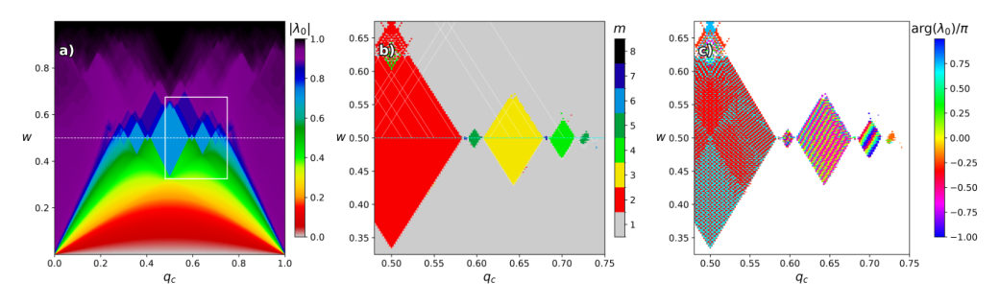
<figcaption class="paper-figure-caption"><b>Fig 1.</b> FIG. 1. Leading resonances over the plane of window centers and widths at n = 10 (N = 1024); the dashed line marks w = 1/2. (a) Modulus |λ0|: all diamonds share |λ0| ≃2−1/2, except the cones of the fixed point q = 0 near the edges (|λ0| ≃0.9–0.95); between these cones and below the diamonds no orbit survives and |λ0| decreases to zero with w, and positive-entropy repellers, with |λ0| approaching 1, appear only for w &gt; 1/2; the rectangle marks the region shown in (b) and (c). (b) Multiplet size m, with the border-collision lines of Eq. (3) (white). (c) Phase arg(λ0)/π where m &gt; 1: inside each diamond arg λ0 takes one of the T values (ΦO + 2πk)/T of Eq. (4), hence the checkerboard pattern.</figcaption>
</figure>
<figure class="paper-figure-card">
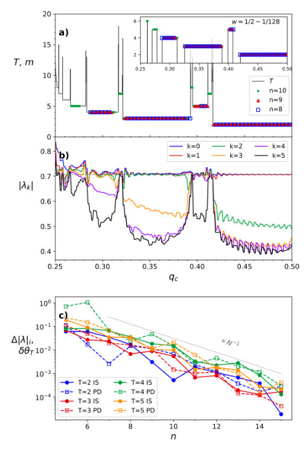
<figcaption class="paper-figure-caption"><b>Fig 2.</b> FIG. 2. Period locking at w = 1/2 for 1/4 ≤qc ≤1/2 (for qc &lt; 1/4 the fixed point survives, and qc →1 −qc is an exact symmetry). (a) Classical period T (black) and multiplet size m for n = 8, 9, 10; inset: w = 1/2 −1/128. (b) Moduli of the six leading eigenvalues at n = 10: on each plateau the multiplet sits at |λk| ≃2−1/2 (dashed line). (c) Intra-band spread ∆|λ|i (IS, full circles) and phase deviation δθT (PD, open squares) versus n, at qc = 0.50, 0.35, 0.30 and 25/62 inside the T = 2, . . . , 5 plateaus; dotted line: ∝N −1.</figcaption>
</figure>
<figure class="paper-figure-card">
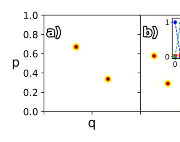
<figcaption class="paper-figure-caption"><b>Fig 3.</b> FIG. 3. Biorthogonal distribution P</figcaption>
</figure>
<figure class="paper-figure-card">
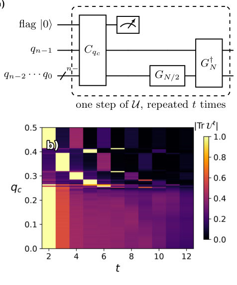
<figcaption class="paper-figure-caption"><b>Fig 4.</b> FIG. 4. (a) One step of U at w = 1/2: the comparator Cqc writes on a flag qubit whether the position register lies outside W(qc, 1/2), the flag is measured mid-circuit (runs are kept when it reads 0) and reset, and the closed map U = G† N(I ⊗GN/2) is applied; for qc = 1/4, Cqc is a CNOT from the most significant qubit qn−1. (b) Blind spectroscopy at n = 10: |Tr Ut| for t = 2, . . . , 12, normalized for each qc by its maximum, revives at multiples of the period and reconstructs the staircase of Fig. 2(a) without orbit information.</figcaption>
</figure>
</div>

<p><strong>Summary.</strong> This paper investigates the quantization of quantum resonances in the open quantum Baker Map, a model for chaotic open systems. It shows that the leading resonances form quantized multiplets whose properties are determined by the classical action of surviving periodic orbits. By realizing the open map as a mid-circuit measurement, the authors provide a pathway to experimentally test these quantization rules using quantum processors.</p>
<p><strong>Why it may be interesting.</strong> This work bridges quantum chaos, semiclassical quantization, and open quantum dynamics, providing a concrete, measurable platform (mid-circuit measurement) to test fundamental quantization rules in non-Hamiltonian settings.</p>
<details>
<summary>Detailed structure</summary>
<p><strong>Main problem.</strong> The study focuses on understanding the quantization of leading resonances and the behavior of quantum states in open quantum systems whose classical limit is chaotic, specifically using the open quantum Baker Map.</p>
<p><strong>Main result.</strong> The leading resonances form quantized scar multiplets whose modulus saturates the topological-pressure bound at $2^{-1/2}$ when the system is opened via a mid-circuit measurement, leading to deterministic cycling cat states.</p>
<p><strong>Method.</strong> The analysis combines semiclassical quantization techniques (relating eigenvalues to classical actions) with the modeling of open dynamics via projection onto a position window, which is realized as a mid-circuit measurement.</p>
<p><strong>Model / system.</strong> The primary model is the open quantum Baker Map, a paradigmatic system for studying quantum chaos. The evolution is governed by a projected unitary operator $U = U \Pi_W$, where $\Pi_W$ restricts the dynamics to a position window $W(q_c, w)$.</p>
<p><strong>Key observables.</strong> Leading resonances (eigenvalues $\lambda_k$), the modulus $|\lambda_0|$, the collective phase $\Phi_O$, and the cycling fidelity $F_j(t)$ of the resulting cat states.</p>
<p><strong>Important parameters / regimes.</strong> The window width $w$ (especially the critical value $w=1/2$), the number of resonances $T$, and the classical action $\Phi_O$.</p>
<p><strong>Assumptions / limitations.</strong> The analysis assumes that the opening mechanism effectively leaves a single surviving periodic orbit, allowing for the direct application of quantization rules.</p>
<p><strong>Figures summary.</strong> Figures illustrate the leading resonances over the $(q_c, w)$ plane, showing modulus saturation at $w=1/2$, and demonstrate the detection of quantum plateaus and the decay of finite-N corrections.</p>
<p><strong>Paper structure.</strong> The paper establishes the classical pruning geometry, derives the semiclassical quantization rule for the leading resonances forming scar multiplets, and then analyzes the resulting open dynamics, showing the formation of cycling cat states via mid-circuit measurement.</p>
</details>
<details>
<summary>Abstract</summary>
<p>We open the quantum baker map with a position window of width $w$ and center $q_c$. Classical pruning tiles the $(q_c,w)$ plane into diamonds where the $T$ leading resonances form root-of-unity multiplets. At $w=1/2$ one periodic orbit survives for almost every $q_c$, and the multiplets are quantized without free parameters: their modulus $2^{-1/2}$ saturates the pressure bound and their phase is the orbit action. They form cycling multicomponent cat states, and the opening becomes one mid-circuit measurement, enabling spectroscopy with $\sim10^2$ shots on quantum processors.</p>
</details>
<p><sub><a href="#top">↑ back to top</a></sub></p>

<p><a id="paper-2610.23043"></a></p>
<h3 id="discrete-time-crystals-and-classical-logic-gates-in-coupled-open-dicke-models"><a href="http://arxiv.org/abs/2610.23043v1">Discrete time crystals and classical logic gates in coupled open Dicke models</a></h3>
<p><strong>Authors:</strong> Emmanuel D. G. U, Roy D. Jara, Jayson G. Cosme<br>
<strong>Type:</strong> theory · <strong>Category:</strong> quantum information and computing · <strong>PDF:</strong> <a href="https://arxiv.org/pdf/2610.23043v1">https://arxiv.org/pdf/2610.23043v1</a><br>
<strong>Analysis basis:</strong> full PDF text, analyzed in chunks
<strong>Topic relevance:</strong> 🔥 <code>driven-dissipative phase transition</code> <strong>4/5</strong> · <code>Keldysh / 2PI / non-Gaussian methods</code> <strong>3/5</strong> · <code>analog quantum simulation</code> <strong>3/5</strong> · <code>methods for driven-dissipative</code> <strong>3/5</strong> · <code>correlated / nonlocal dissipation</code> <strong>2/5</strong> · <code>non-equilibrium universality</code> <strong>2/5</strong> · <code>Dicke superradiance</code> <strong>1/5</strong></p>
<div class="figure-strip-hint">↔ Scroll figures horizontally</div>
<div class="paper-figures-scroll">
<figure class="paper-figure-card">
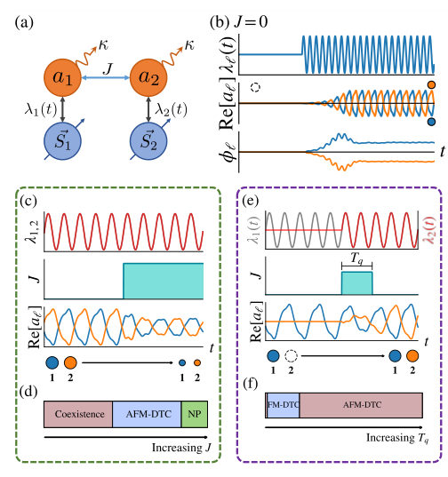
<figcaption class="paper-figure-caption"><b>Fig 1.</b> FIG. 1. (a) Sketch of the DD. (b) (Top panel) The light- matter coupling λi(t). (Middle panel) The real part of the bosonic field a(t) for the two symmetry broken DTC states of the Dicke model, represented by the blue (dark) and orange (light) circles. The hollow circles represents the NP. (Bottom panel) The absolute time phases for the DTC states. (c) and (e) (Top panel) The light-matter coupling λi(t) for each site. (Middle panel) The coupling strength J between two sites in the DLM. (Bottom panel) Exemplary dynamics for Re[aℓ] following the protocol shown in the panels above. The relative sizes of the circles represent the oscillation amplitude of the DTCs. Sketch of the phase diagram...</figcaption>
</figure>
<figure class="paper-figure-card">
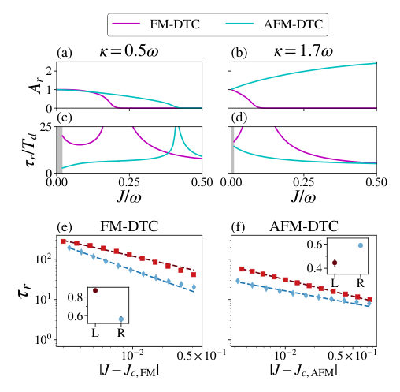
<figcaption class="paper-figure-caption"><b>Fig 2.</b> FIG. 2. (a), (b) DTC response amplitude, Ar, and (c), (d)relaxation time of the response amplitude, τr, after cou- pling the sites. (e), (f) Power law-scaling of τr for the FM-DTC and AFM-DTC near the critical points Jc,FM and Jc,AFM, respectively, for κ = 0.5ω. The square (di- amond) datapoints are taken from the right (left) side of Jc,FM/AFM. The inset plots show the critical exponents ob- tained from the power-law fit. The other parameters used are {ω0, ωd, A, N, λ0} = {ω, 0.8ω, 0.5, 107, 0.85λc}.</figcaption>
</figure>
<figure class="paper-figure-card">
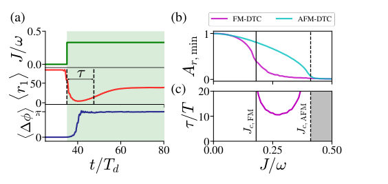
<figcaption class="paper-figure-caption"><b>Fig 3.</b> FIG. 4. (a) (Top panel) The coupling strength J between the two sites, (Middle panel) ⟨r1⟩, and (Bottom panel) ⟨∆ϕ⟩as functions of time. The green-shaded region indicates when the two sites are coupled with strength J = 0.33ω (b) Ar,min and (c) the lifetime τ of the FM-DTC as a function of J when N = 105. The other parameters used are {ω0, ωd, A, λ0 κ} = {ω, 0.8ω, 0.5, 0.85λc, 0.5ω}.</figcaption>
</figure>
<figure class="paper-figure-card">
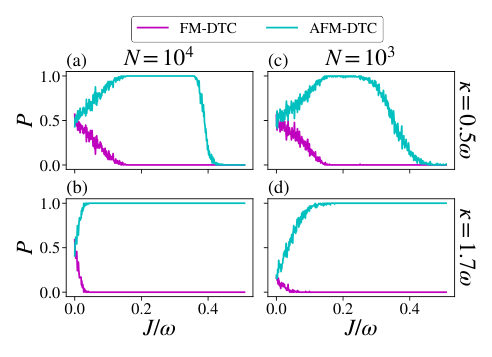
<figcaption class="paper-figure-caption"><b>Fig 4.</b> FIG. 3. The probability P of obtaining either an FM-DTC or AFM-DTC as the final steady state across 100 trajectories for (a), (c) κ = 0.5ω and (b), (d) κ = 1.7ω. Here, the two sites are connected for the entire duration of the simulation. We consider a system size of N = 104 for (a) and (b), while we set N = 103 for (c) and (d). The other parameters are {ω0, ωd, A, N, λ0} = {ω, 0.8ω, 0.5, 107, 0.85λc}.</figcaption>
</figure>
<figure class="paper-figure-card">
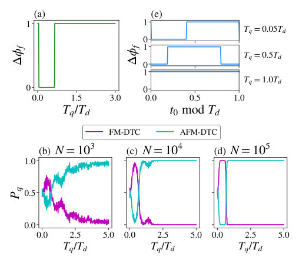
<figcaption class="paper-figure-caption"><b>Fig 5.</b> FIG. 5. (a) Mean-field phase difference ∆ϕf of the two sites at the final time as a function of Tq for the pulsed coupling. (b) - (d) The probability P of obtaining either an FM-DTC or an AFM-DTC when performing the protocol for (b) N = 103, (c) N = 104, and (d) N = 105. (e) Behavior of ∆ϕ when the synchronization / anti-synchronization protocol is performed at different times in the driving cycle for (Top panel) Tq = 0.05Td, (Middle panel) Tq = 0.5Td, and (Bottom panel) Tq = 1.0Td. The other parameters used are {ω0, ωd, A, N, λ0 κ} = {ω, 0.8ω, 0.5, 107, 0.85λc, 0.5ω}.</figcaption>
</figure>
</div>

<p><strong>Summary.</strong> This paper studies coupled Discrete Time Crystals (DTCs) in the Dicke model, analyzing their dynamics under coupling and dissipation. The authors show that DTCs can be manipulated to perform classical logic operations (NAND/NOR) by implementing a protocol of sequential pulsed coupling. This work suggests that engineered quantum many-body systems can serve as robust, physical building blocks for quantum information processing.</p>
<p><strong>Why it may be interesting.</strong> This work bridges fundamental condensed matter physics (DTCs, open quantum systems) with quantum information processing, demonstrating a physical platform for quantum computation using non-equilibrium dynamics.</p>
<details>
<summary>Detailed structure</summary>
<p><strong>Main problem.</strong> The paper investigates the dynamics of coupled Discrete Time Crystals (DTCs) and proposes using these physical systems to implement classical logic gates like NAND and NOR.</p>
<p><strong>Main result.</strong> A protocol for implementing NAND and NOR gates is demonstrated using three coupled DTCs, showing that the logic operation is robust within specific parameter regimes.</p>
<p><strong>Method.</strong> The dynamics are analyzed using mean-field simulations derived from the Lindblad master equation, supplemented by the Truncated Wigner Approximation (TWA) to account for quantum fluctuations.</p>
<p><strong>Model / system.</strong> The system is based on the coupled Dicke model (or Dicke dimer) involving bosonic and spin operators, exhibiting DTC phases characterized by broken discrete time translation symmetry.</p>
<p><strong>Key observables.</strong> DTC response amplitude ($A_r$), relaxation time ($    au_r$), final phase difference ($\Delta\phi_f$), and the probability of achieving a valid logic gate ($P_{ ext{Valid}}$).</p>
<p><strong>Important parameters / regimes.</strong> Coupling strength ($J$), dissipation ($\kappa$), and pulse durations ($T_q$ or $T_{1O}$), relative to critical coupling strengths ($J_{c,FM}, J_{c,AFM}$).</p>
<p><strong>Assumptions / limitations.</strong> The use of the Truncated Wigner Approximation (TWA) to map the master equation to effective stochastic equations, and the assumption that sequential pulsed coupling can reliably reset and operate the logic gates.</p>
<p><strong>Figures summary.</strong> Figures illustrate the time evolution of amplitudes and phase differences during coupling, show power-law scaling of relaxation times near critical points, and map out the parameter space required for successful NAND/NOR gate operations.</p>
<p><strong>Paper structure.</strong> The paper first analyzes the general dynamics of coupled DTCs, identifying phase transitions and the effect of coupling. It then details the use of pulsed coupling to control the final state (synchronization/anti-synchronization) and culminates in proposing and verifying the NAND/NOR logic gate architecture.</p>
</details>
<details>
<summary>Abstract</summary>
<p>We investigate the dynamics of coupled discrete time crystals (DTCs) in the coupled Dicke model or Dicke dimer (DD) with dissipation. By numerically simulating the mean-field dynamics of the system, we show that coupling two DTCs decreases their oscillation amplitude following a transient relaxation period. For sufficiently strong coupling, the coupled DTCs become unstable, resulting in the system relaxing towards the normal phase (NP). We demonstrate that the relaxation time diverges near the critical coupling strength, suggesting a continuous phase transition. Using the truncated Wigner approximation (TWA), we explore how the dynamics are affected by the introduction of quantum fluctuations. We also consider a scenario in which an NP is briefly coupled to a DTC, seeding the NP to transform into a DTC that is either synchronized or anti-synchronized relative to the DTC. We investigate the robustness of this phenomenon in the presence of noise. Using these results, we propose a scheme to perform NAND and NOR operations with three DTCs by sequentially coupling the input and output sites. We identify the parameter regimes in which the logic gate architecture remains valid, and investigate how the protocol is affected by the presence of quantum fluctuations.</p>
</details>
<p><sub><a href="#top">↑ back to top</a></sub></p>

<p><a id="paper-2610.23106"></a></p>
<h3 id="from-quantum-emitters-to-technological-platforms-a-perspective-on-semiconductor-quantum-dots"><a href="http://arxiv.org/abs/2610.23106v1">From quantum emitters to technological platforms: a perspective on semiconductor quantum dots</a></h3>
<p><strong>Authors:</strong> Klaus D. Jöns, Dorian A. Gangloff, Doris E. Reiter<br>
<strong>Type:</strong> both · <strong>Category:</strong> quantum information and computing · <strong>PDF:</strong> <a href="https://arxiv.org/pdf/2610.23106v1">https://arxiv.org/pdf/2610.23106v1</a><br>
<strong>Analysis basis:</strong> full PDF text, analyzed in chunks
<strong>Topic relevance:</strong> 🔥 <code>quantum optics experiment</code> <strong>4/5</strong> · <code>QC/QI experiment</code> <strong>3/5</strong> · <code>Tavis-Cummings &amp; cavity-many-emitter</code> <strong>2/5</strong> · <code>analog quantum simulation</code> <strong>2/5</strong> · <code>Keldysh / 2PI / non-Gaussian methods</code> <strong>1/5</strong> · <code>correlated / nonlocal dissipation</code> <strong>1/5</strong> · <code>driven-dissipative phase transition</code> <strong>1/5</strong> · <code>interference shaping light</code> <strong>1/5</strong> · <code>methods for driven-dissipative</code> <strong>1/5</strong> · <code>quantum measurements</code> <strong>1/5</strong></p>
<div class="figure-strip-hint">↔ Scroll figures horizontally</div>
<div class="paper-figures-scroll">
<figure class="paper-figure-card">
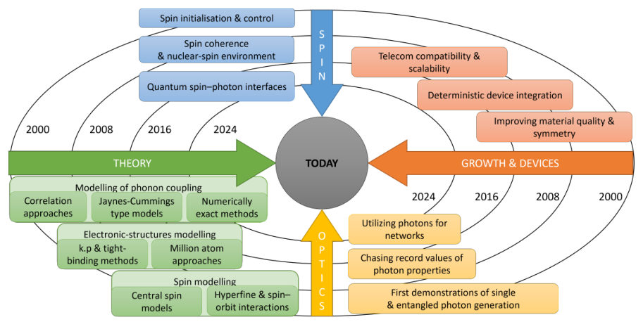
<figcaption class="paper-figure-caption"><b>Fig 1.</b> Figure 1: Illustration of the evolution of the research field of QDs from around 2000 to the present. The field has progressed along four main axes: optics, growth and devices, theory, and spin.</figcaption>
</figure>
<figure class="paper-figure-card">

<figcaption class="paper-figure-caption"><b>Fig 2.</b> Figure 2: Visualization of the feedback loop be- tween academia and industry. Fundamental experi- mental and theoretical research enables the development of quantum photonic devices, which are then translated into industrial technologies. Industrial constraints and requirements pose new questions to academia, forming a cycle of innovation.</figcaption>
</figure>
<figure class="paper-figure-card">
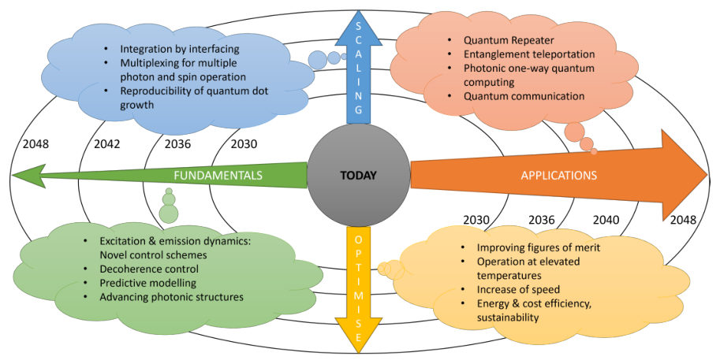
<figcaption class="paper-figure-caption"><b>Fig 3.</b> Figure 3: Illustration of the evolution of the research field of QDs towards the future. We envision along four lines: fundamentals, applications, scaling and optimization.</figcaption>
</figure>
</div>

<p><strong>Summary.</strong> This perspective reviews the maturation of semiconductor quantum dots as sources for quantum light, detailing the progress from initial single-photon demonstrations to complex entangled sources. It highlights the critical interplay between fundamental physics breakthroughs (spin control, coherence engineering) and engineering challenges (telecom compatibility, integration). The paper argues that the field is moving toward realizing fully integrated, scalable quantum photonic hardware.</p>
<p><strong>Why it may be interesting.</strong> This is highly relevant as it bridges solid-state physics, open quantum systems (phonon coupling, decoherence), and quantum optics. The detailed discussion of Hamiltonian extensions (beyond simple Jaynes-Cummings) and the interplay between material science (growth) and quantum control is valuable.</p>
<details>
<summary>Detailed structure</summary>
<p><strong>Main problem.</strong> The central challenge is developing robust, scalable, and high-fidelity sources of single and entangled photons from semiconductor quantum dots to power photonic quantum technologies.</p>
<p><strong>Main result.</strong> The field has progressed from basic single-photon emission demonstrations to advanced control over spin and photon states, pushing towards deterministic, telecom-compatible, and integrated quantum devices.</p>
<p><strong>Method.</strong> The review synthesizes decades of research, covering experimental advancements in QD growth and optical characterization alongside theoretical modeling of light-matter and spin dynamics.</p>
<p><strong>Model / system.</strong> The primary system is the semiconductor quantum dot (QD) in III-V materials, which acts as a coherent light-matter interface. Theoretical models incorporate electron-phonon coupling, hyperfine interactions, and are evolving from simple Jaynes-Cummings models to complex polaron master equations.</p>
<p><strong>Key observables.</strong> Single-photon emission rate, indistinguishability, entanglement fidelity, spin coherence time ($T_2^*$), and emission wavelength compatibility (O-band/C-band).</p>
<p><strong>Important parameters / regimes.</strong> The key constraints involve achieving high determinism, low Fine-Structure Splitting (FSS), and maintaining coherence at telecom wavelengths.</p>
<p><strong>Assumptions / limitations.</strong> The review implicitly assumes the successful integration of fundamental quantum control (spin/photon) with scalable semiconductor fabrication techniques.</p>
<p><strong>Figures summary.</strong> Figure 1 illustrates the chronological evolution of QD research across optics, growth, theory, and spin. Other figures map the feedback loop between fundamental research and industrial application, and the future evolution along performance and scaling axes.</p>
<p><strong>Paper structure.</strong> The paper follows a historical and thematic review, tracing the development of QDs across four axes (optics, growth, spin, theory) from the early 2000s to current multi-photon and networking concepts, concluding with future integration challenges.</p>
</details>
<details>
<summary>Abstract</summary>
<p>Photonic quantum technologies are based on controlled photon states. To generate these, quantum dots have emerged as excellent sources of single and entangled photons. In this Perspective, we briefly review the chronological development of quantum dots as photon sources, from their beginnings as quantum emitters in the early 2000s to the advanced photonic devices being developed today. We highlight the interplay between fundamental research and industrial aspects before discussing the photonic quantum technologies we expect to emerge in the near future.</p>
</details>
<p><sub><a href="#top">↑ back to top</a></sub></p>

<p><a id="paper-2610.23699"></a></p>
<h3 id="symmetry-constraints-on-magnon-induced-dynamics-of-skyrmion-helicity-in-frustrated-magnets"><a href="http://arxiv.org/abs/2610.23699v1">Symmetry constraints on magnon-induced dynamics of skyrmion helicity in frustrated magnets</a></h3>
<p><strong>Authors:</strong> Gabriel Mayor, Christina Psaroudaki<br>
<strong>Type:</strong> theory · <strong>Category:</strong> other · <strong>PDF:</strong> <a href="https://arxiv.org/pdf/2610.23699v1">https://arxiv.org/pdf/2610.23699v1</a><br>
<strong>Analysis basis:</strong> full PDF text, analyzed in chunks
<strong>Topic relevance:</strong> 🔥 <code>Keldysh / 2PI / non-Gaussian methods</code> <strong>4/5</strong> · <code>analog quantum simulation</code> <strong>3/5</strong> · <code>correlated / nonlocal dissipation</code> <strong>3/5</strong> · <code>driven-dissipative phase transition</code> <strong>2/5</strong> · <code>methods for driven-dissipative</code> <strong>2/5</strong> · <code>Frenkel-Kontorova</code> <strong>1/5</strong> · <code>non-equilibrium universality</code> <strong>1/5</strong> · <code>quantum measurements</code> <strong>1/5</strong></p>
<div class="figure-strip-hint">↔ Scroll figures horizontally</div>
<div class="paper-figures-scroll">
<figure class="paper-figure-card">
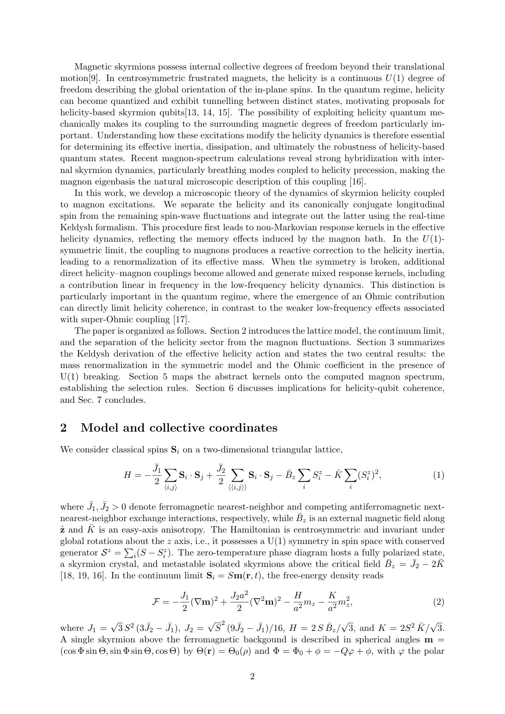
<figcaption class="paper-figure-caption"><b>Fig 1.</b> Low-resolution page preview, page 2</figcaption>
</figure>
<figure class="paper-figure-card">
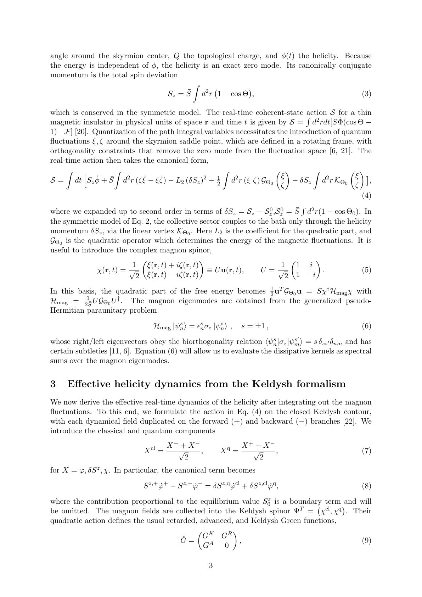
<figcaption class="paper-figure-caption"><b>Fig 2.</b> Low-resolution page preview, page 3</figcaption>
</figure>
<figure class="paper-figure-card">
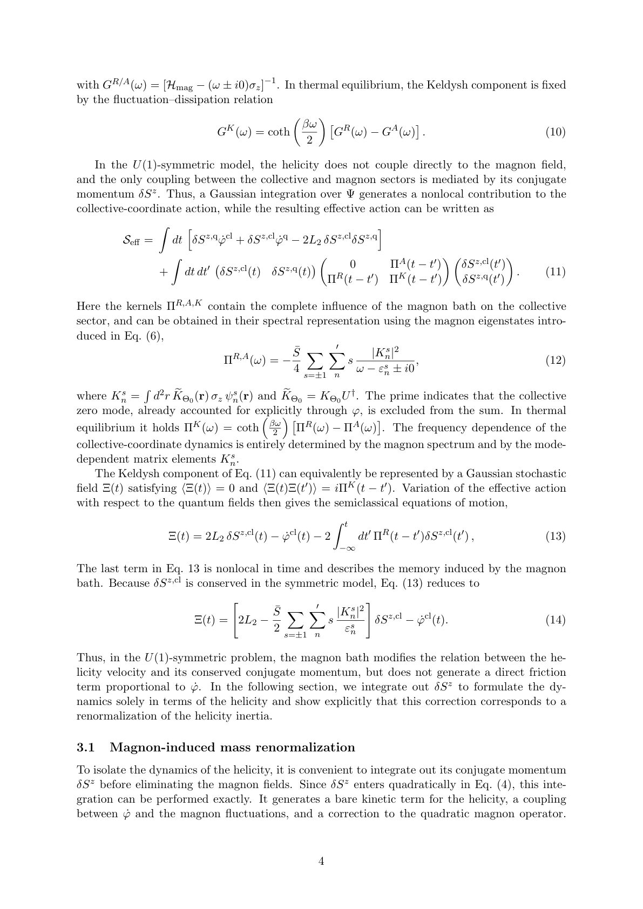
<figcaption class="paper-figure-caption"><b>Fig 3.</b> Low-resolution page preview, page 4</figcaption>
</figure>
<figure class="paper-figure-card">
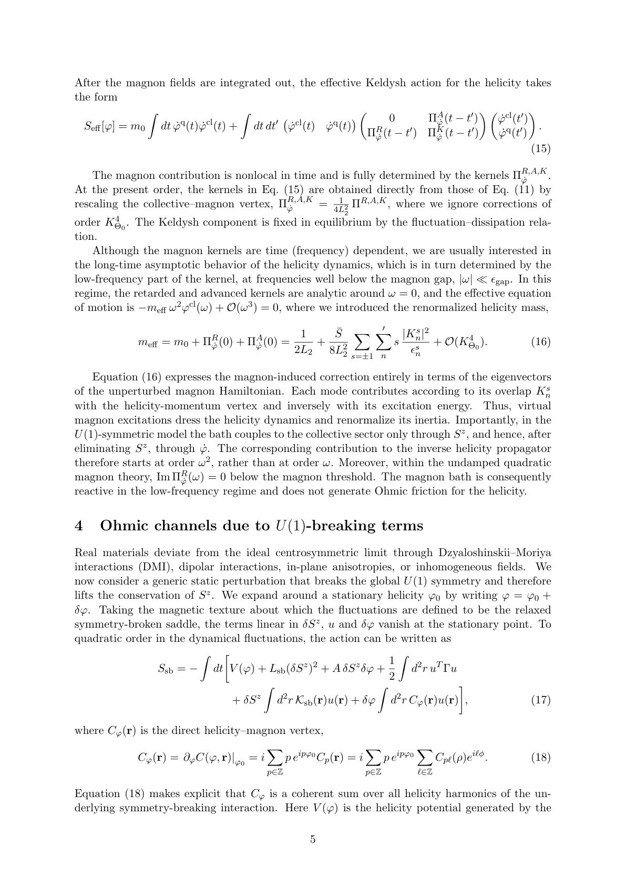
<figcaption class="paper-figure-caption"><b>Fig 4.</b> Low-resolution page preview, page 5</figcaption>
</figure>
<figure class="paper-figure-card">
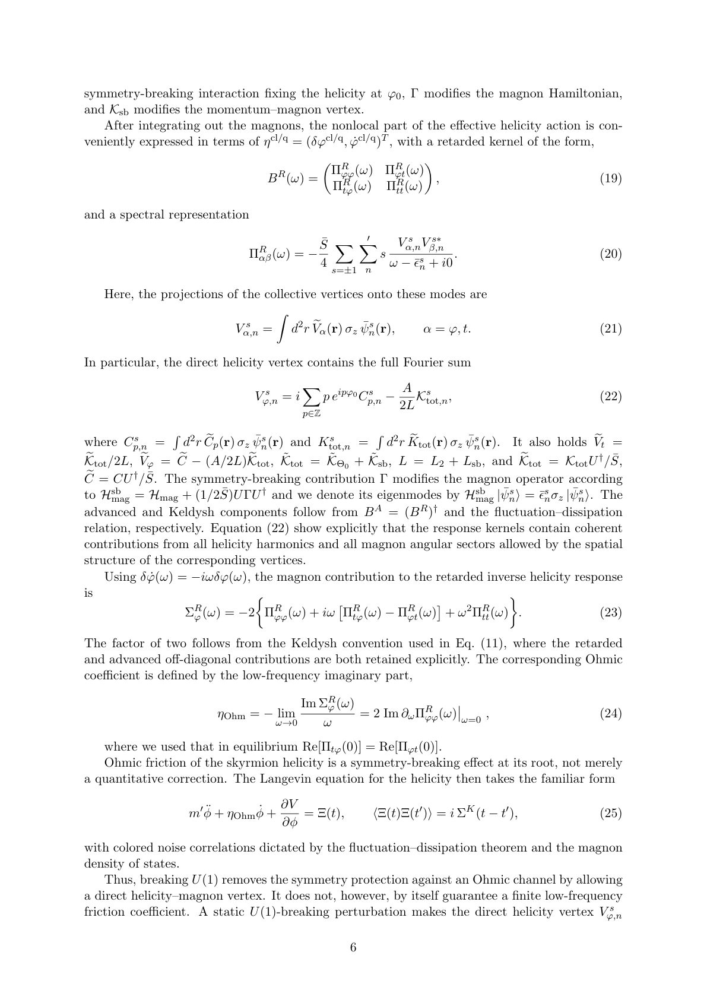
<figcaption class="paper-figure-caption"><b>Fig 5.</b> Low-resolution page preview, page 6</figcaption>
</figure>
</div>

<p><strong>Summary.</strong> This theoretical work develops a microscopic framework to calculate how magnon excitations damp the dynamics of a skyrmion's helicity in frustrated magnets. By using the Keldysh formalism, the authors show that dissipation requires both symmetry-breaking terms and finite magnon lifetimes. This establishes fundamental selection rules governing the decoherence of helicity-based quantum states.</p>
<p><strong>Why it may be interesting.</strong> The work provides a detailed, microscopic understanding of how dissipation (damping) occurs in a quantum collective variable (helicity) due to coupling to a bosonic bath (magnons), which is crucial for designing robust quantum memory elements.</p>
<details>
<summary>Detailed structure</summary>
<p><strong>Main problem.</strong> The paper addresses how the coherence of a magnetic skyrmion's helicity, treated as a collective coordinate, is influenced by its coupling to the surrounding magnon environment in frustrated magnets.</p>
<p><strong>Main result.</strong> Dissipation of helicity requires both a symmetry-breaking perturbation (to generate coupling vertices) and finite magnon lifetimes (to provide the necessary spectral weight for Ohmic friction).</p>
<p><strong>Method.</strong> The authors employ a microscopic Keldysh formalism to integrate out the magnon fluctuations, deriving an effective action for the helicity coordinate.</p>
<p><strong>Model / system.</strong> The system is a magnetic skyrmion in a frustrated magnet, modeled on a 2D triangular lattice with exchange and anisotropy interactions. The dynamics are analyzed by treating the helicity ($\phi$) as a soft collective coordinate coupled to the magnon bath.</p>
<p><strong>Key observables.</strong> Ohmic friction coefficient ($\eta_{Ohm}$), renormalized helicity mass ($m_{eff}$), and mode-resolved selection rules for magnon coupling.</p>
<p><strong>Important parameters / regimes.</strong> The $U(1)$ symmetry breaking strength, magnon linewidth ($\Gamma_n$), and the specific symmetry of the perturbation (e.g., DMI vs. in-plane field).</p>
<p><strong>Assumptions / limitations.</strong> The analysis relies on a weak-perturbation expansion and the use of the real-time Keldysh formalism to treat the coupling to the magnon bath.</p>
<p><strong>Figures summary.</strong> Not specified.</p>
<p><strong>Paper structure.</strong> The paper progresses from establishing the Hamiltonian and continuum description to deriving the effective action via Keldysh techniques. It then analyzes the $U(1)$-symmetric limit (reactive renormalization) before introducing symmetry-breaking terms and finite magnon lifetimes to derive the dissipation mechanism.</p>
</details>
<details>
<summary>Abstract</summary>
<p>The helicity of a magnetic skyrmion in a centrosymmetric frustrated magnet is a soft collective coordinate and a candidate variable for encoding quantum information. Its coherence is ultimately influenced by coupling to the magnon environment, which is commonly incorporated only phenomenologically. Here we combine a microscopic Keldysh treatment of the helicity--magnon coupling to resolve the contribution of individual magnon modes to the effective helicity dynamics. In the U(1)-symmetric model, the magnon bath generates, to leading order, a reactive helicity mass renormalization. When U(1) symmetry is broken, additional direct helicity--magnon couplings become allowed. In the presence of finite magnon lifetimes, these couplings generate an Ohmic contribution to the low-frequency helicity dynamics. The spatial symmetry of the perturbation determines which magnon sectors contribute to this damping, providing mode-resolved selection rules for the helicity--magnon coupling. Thus, we establish a microscopic connection between helicity dynamics and the excitation spectrum of frustrated skyrmions and identify the symmetry constraints governing dissipation of helicity-based quantum states.</p>
</details>
<p><sub><a href="#top">↑ back to top</a></sub></p>

<p><a id="paper-2610.22482"></a></p>
<h3 id="exploring-quantum-phase-transitions-beyond-landau-theory-on-a-quantum-processor"><a href="http://arxiv.org/abs/2610.22482v1">Exploring Quantum Phase Transitions Beyond Landau Theory on a Quantum Processor</a></h3>
<p><strong>Authors:</strong> Ruizhe Shen, Yin Zhong, Ching Hua Lee<br>
<strong>Type:</strong> both · <strong>Category:</strong> statistical mechanics · <strong>PDF:</strong> <a href="https://arxiv.org/pdf/2610.22482v1">https://arxiv.org/pdf/2610.22482v1</a><br>
<strong>Analysis basis:</strong> full PDF text, analyzed in chunks
<strong>Topic relevance:</strong> 🔥 <code>analog quantum simulation</code> <strong>4/5</strong> · <code>QC/QI experiment</code> <strong>3/5</strong> · <code>methods for driven-dissipative</code> <strong>3/5</strong> · <code>driven-dissipative phase transition</code> <strong>2/5</strong> · <code>non-equilibrium universality</code> <strong>2/5</strong> · <code>quantum measurements</code> <strong>1/5</strong></p>
<div class="figure-strip-hint">↔ Scroll figures horizontally</div>
<div class="paper-figures-scroll">
<figure class="paper-figure-card">
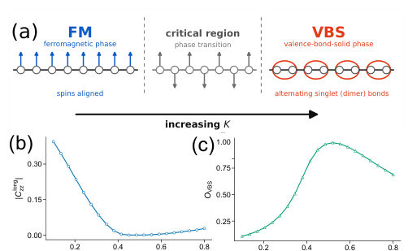
<figcaption class="paper-figure-caption"><b>Fig 1.</b> FIG. 1. Ferromagnetic-to-VBS transition analogous to a deconfined phase transition. (a) Schematic illustra- tion of the frustration-driven quantum phase transition ob- tained by increasing K for Jz &gt; Jx. At small K, the system is in a ferromagnetic (FM) phase characterized by long-range spin alignment. At large K, frustration favors alternating strong bonds, giving rise to a valence-bond-solid (VBS) phase with spontaneously broken lattice translation symmetry. (b) Absolute value of the long-distance ferromagnetic correlator |Clong zz | [Eq. 2] as a function of K. Its rapid suppression near Kc signals the destruction of ferromagnetic order. (c) VBS order parameter OVBS [Eq. 3] as a function...</figcaption>
</figure>
<figure class="paper-figure-card">
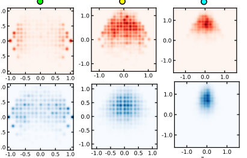
<figcaption class="paper-figure-caption"><b>Fig 2.</b> FIG. 3. Quantum hardware measurement of the fer- romagnetic correlator across the FM–VBS transition. (a) Bulk spin correlator Czz(i = L/2, j = L/2 + L/4) = ⟨σz L/2σz 3L/4⟩as a function of the frustration strength K. Black circles denote DMRG results, and orange triangles de- note IBM quantum-hardware measurements. The correla- tor remains finite in the small-K ferromagnetic regime and is rapidly suppressed as K approaches the transition region near Kc ≈0.4, signaling the loss of long-range ferromagnetic order. (b) Joint probability distributions of the competing order parameters ( ¯OzFM, ¯O′ VBS) obtained from DMRG and IBM Quantum data at the marked values of K. In the FM regime, the weight...</figcaption>
</figure>
<figure class="paper-figure-card">
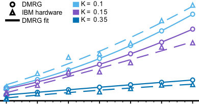
<figcaption class="paper-figure-caption"><b>Fig 3.</b> FIG. 4. Measurements of distance-resolved corre- lations and a finite-size correlation length on quan- tum hardware. (a) Ferromagnetic correlator Czz(r) = ⟨ZL/2ZL/2+r⟩for L = 32 at selected K. Open circles and tri- angles show DMRG and IBM hardware results, respectively. Solid curves are fits to the DMRG data. (b) Second-moment correlation length ξ2nd [Eq. 8] versus system size L for selected K, with the same marker and line conventions. At K = 0.35, ξ2nd increases approximately linearly with L, ξ2nd ∝L. Here, Jz = 1.0 and Jx = 0.8.</figcaption>
</figure>
<figure class="paper-figure-card">
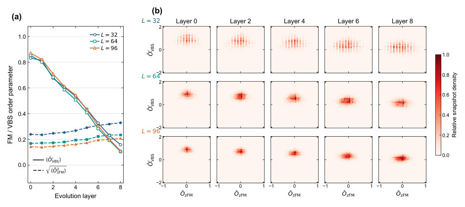
<figcaption class="paper-figure-caption"><b>Fig 4.</b> FIG. 5. Floquet-engineered evolution of competing FM and VBS correlations on quantum hardware. (a) Evolution of the mean VBS snapshot estimator ⟨¯O′ VBS⟩(solid lines) and FM fluctuation amplitude p</figcaption>
</figure>
</div>

<p><strong>Summary.</strong> This work explores quantum phase transitions between competing magnetic orders (FM and VBS) that defy conventional Landau theory. By utilizing superconducting quantum processors, the authors simulate the transition dynamics, confirming the suppression of long-range FM order and the emergence of VBS correlations. This establishes a versatile quantum-hardware platform for probing complex critical phenomena.</p>
<p><strong>Why it may be interesting.</strong> The combination of simulating unconventional QPTs (like deconfined criticality) on near-term quantum hardware provides a crucial testbed for many-body physics beyond standard theoretical models.</p>
<details>
<summary>Detailed structure</summary>
<p><strong>Main problem.</strong> The paper investigates continuous quantum phase transitions (QPTs) that challenge the Landau-Ginzburg-Wilson paradigm, specifically focusing on direct transitions between phases with distinct symmetries.</p>
<p><strong>Main result.</strong> The authors successfully demonstrated the signatures of a direct continuous Ferromagnetic-to-Valence-Bond-Solid (FM-VBS) transition using both theoretical simulations and superconducting quantum hardware measurements.</p>
<p><strong>Method.</strong> The study combines theoretical tools like DMRG with quantum hardware protocols, employing tensor-network-assisted circuit preparation to simulate ground states and non-equilibrium dynamics.</p>
<p><strong>Model / system.</strong> The system is a frustrated one-dimensional spin-1/2 XZ chain governed by a Hamiltonian involving nearest and next-nearest-neighbor couplings, studied across a frustration strength K.</p>
<p><strong>Key observables.</strong> Long-distance ferromagnetic correlators ($C_{	ext{long}}^{zz}$), staggered VBS order parameter ($O_{	ext{VBS}}$), and the second-moment correlation length ($\xi_{2	ext{nd}}$).</p>
<p><strong>Important parameters / regimes.</strong> The frustration strength K, with critical regimes identified near $K_c \approx 0.4$.</p>
<p><strong>Assumptions / limitations.</strong> The quantum hardware simulation relies on approximating DMRG states via parameterized quantum circuits and uses finite-size scaling analysis to infer critical behavior.</p>
<p><strong>Figures summary.</strong> Figures illustrate the suppression of FM correlations and growth of VBS order across the transition (Fig. 1), and compare hardware measurements of correlators and joint probability distributions against DMRG results (Fig. 3).</p>
<p><strong>Paper structure.</strong> The paper progresses from establishing the theoretical framework of Landau-forbidden transitions, to detailing the quantum hardware protocol for state preparation, and finally presenting results on both equilibrium critical signatures and non-equilibrium dynamics.</p>
</details>
<details>
<summary>Abstract</summary>
<p>Direct continuous quantum phase transitions between phases that break distinct symmetries challenge the conventional Landau-Ginzburg-Wilson paradigm and provide a framework for deconfined quantum criticality. Here, we investigate a Landau-forbidden ferromagnetic-to-valence-bond-solid (FM-VBS) transition in a frustrated one-dimensional spin chain using superconducting quantum processors. Combining matrix-product-state-assisted circuit preparation with quantum-hardware measurements, we resolve the suppression of long-range ferromagnetic correlations and the redistribution of competing-order fluctuations across the transition. Distance-resolved correlations and finite-size analyses reveal signatures consistent with critical behavior. We further extend our investigation to nonequilibrium dynamics, directly preparing dimerized states and tracking the evolution of VBS order and joint FM-VBS fluctuations under local unitary interactions. Our results establish a versatile quantum-hardware framework for probing competing orders, critical correlations, and many-body dynamics beyond conventional Landau theory.</p>
</details>
<p><sub><a href="#top">↑ back to top</a></sub></p>

<p><a id="paper-2610.22532"></a></p>
<h3 id="resonant-pair-production-and-flat-band-melting-in-a-driven-rydberg-chain"><a href="http://arxiv.org/abs/2610.22532v1">Resonant pair production and flat band melting in a driven Rydberg chain</a></h3>
<p><strong>Authors:</strong> Tista Banerjee, K. Sengupta<br>
<strong>Type:</strong> theory · <strong>Category:</strong> other · <strong>PDF:</strong> <a href="https://arxiv.org/pdf/2610.22532v1">https://arxiv.org/pdf/2610.22532v1</a><br>
<strong>Analysis basis:</strong> full PDF text, analyzed in chunks
<strong>Topic relevance:</strong> 🔥 <code>Rydberg arrays</code> <strong>4/5</strong> · 🔥 <code>analog quantum simulation</code> <strong>4/5</strong> · <code>Keldysh / 2PI / non-Gaussian methods</code> <strong>2/5</strong> · <code>methods for driven-dissipative</code> <strong>2/5</strong> · <code>driven-dissipative phase transition</code> <strong>1/5</strong> · <code>non-equilibrium universality</code> <strong>1/5</strong></p>
<div class="figure-strip-hint">↔ Scroll figures horizontally</div>
<div class="paper-figures-scroll">
<figure class="paper-figure-card">
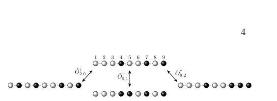
<figcaption class="paper-figure-caption"><b>Fig 1.</b> FIG. 1. Schematic depiction of ˆO† j,a on a representative Fock state for L = 8. Here j is the site index and a counts the change in the number of near-neighbor Rydberg excited pairs after the action of ˆO† j,a.</figcaption>
</figure>
<figure class="paper-figure-card">
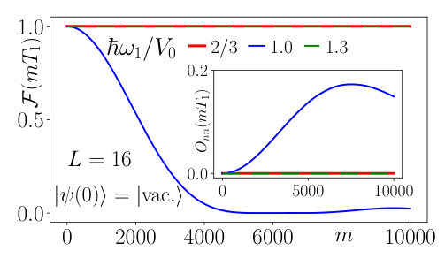
<figcaption class="paper-figure-caption"><b>Fig 2.</b> FIG. 2. Main: Plot of F(mT1) as a function of m starting from |vac⟩for the cosine wave drive protocol with ℏω1/V0 = 2/3 (red), 1 (blue) and 1.3 (green). Inset: pair correlation function Onn(mT1) as a function of m for same parameters. This illustrates the decay of fidelity due to resonant pair pro- duction at V0 = ℏω1 in line with the FPT prediction. For all plots V0/Ω1 = 10, L = 16, and ∆1/Ω1 = 1. See text for details.</figcaption>
</figure>
<figure class="paper-figure-card">
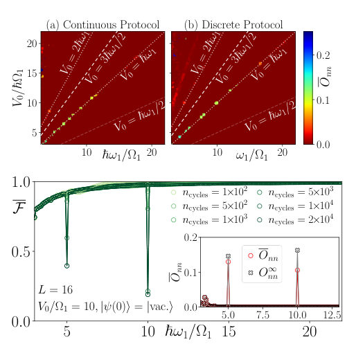
<figcaption class="paper-figure-caption"><b>Fig 3.</b> FIG. 3. Top: Onn as a function of V0/Ω1 and ℏω1/Ω1 for |vac⟩ initial state with (a) the cosine wave drive protocol and (b) square wave drive protocol. The dashed/dotted lines along V0 = ℏω1/2, ℏω1, 3ℏω1/2 and 2ℏω1 are drawn as guide to the eye. For these plots we have taken L = 12. (c) Plot of F averaged over initial ncycle number of cycles (ncycles = 102 − 2 × 104) as a function of ℏω1/Ω1. The inset shows plot of Onn averaged over 2×104 cycles and its infinite-time average value O∞ nn for cosine wave protocol as a function of ℏω1/Ω1. For all panels ∆1/Ω1 = 1 and ν = 3.</figcaption>
</figure>
<figure class="paper-figure-card">
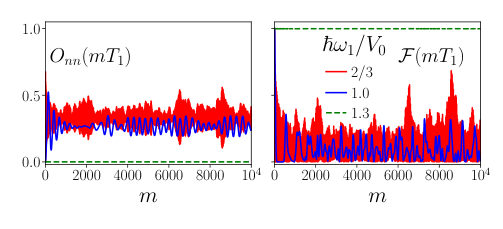
<figcaption class="paper-figure-caption"><b>Fig 4.</b> FIG. 4. (a) Stroboscopic time-evolution of (a) ⟨Onn⟩and (b) F for the cosine wave drive protocol for ℏω1/V0 = 2/3 (red), 1 (blue) and 1.3 (green) for the |Z2⟩initial state. For all plots V0/Ω1 = 10 and L = 16. See text for details.</figcaption>
</figure>
<figure class="paper-figure-card">
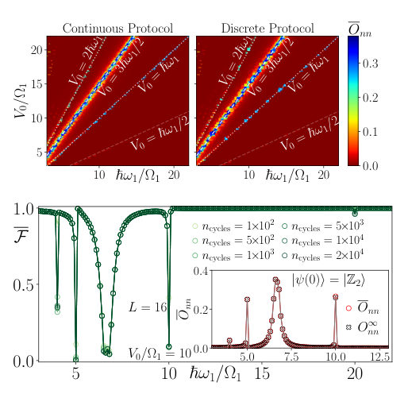
<figcaption class="paper-figure-caption"><b>Fig 5.</b> FIG. 5. Top: Plot of Onn as a function of V0/Ω1 and ℏω1/Ω1 for |Z2⟩initial state with (a) cosine wave drive pro- tocol and (b) square pulse protocol. The dashed lines V0 = ℏω1/2, ℏω1, 3ℏω1/2, 2ℏω1 are drawn as guide to the eye. For these plots we have chosen L = 12. Bottom: Plot of F aver- aged over ncycles = 102−2×104 cycles as a function of ℏω1/Ω1. The inset shows plot of Onn (averaged over 2 × 104 cycles) and O∞ nn for cosine wave protocol. For all plots, ∆1/Ω1 = 1, V0/Ω1 = 10, and ν = 3.</figcaption>
</figure>
</div>

<p><strong>Summary.</strong> This paper theoretically investigates how an exact Floquet flat band in a driven Rydberg chain breaks down due to resonant pair production. Using advanced techniques like Floquet perturbation theory, the authors identify two distinct melting mechanisms—resonant and virtual—and show that the stability is highly dependent on the initial excitation state. The findings suggest measurable signatures, such as pair correlation functions, that can be probed using current Rydberg quantum simulator platforms.</p>
<p><strong>Why it may be interesting.</strong> This work directly addresses non-equilibrium dynamics in highly interacting quantum systems (Rydberg arrays), which is a major frontier in AMO physics. The identification of specific resonance mechanisms and the proposal of pair correlation measurements provide concrete, testable predictions for quantum simulators.</p>
<details>
<summary>Detailed structure</summary>
<p><strong>Main problem.</strong> The study investigates the resonant pair production and the subsequent melting of exact Floquet flat bands in a periodically driven Rydberg chain.</p>
<p><strong>Main result.</strong> Flat band melting occurs via two mechanisms: many-body resonances involving pair production, and virtual processes accessing intermediate states. The stability of the system depends strongly on the initial state, with $|Z_3\rangle$ showing melting via virtual processes.</p>
<p><strong>Method.</strong> The analysis employs time-dependent Schrieffer-Wolff transformations and Floquet perturbation theory (FPT) to analyze the effective Hamiltonian and its corrections.</p>
<p><strong>Model / system.</strong> The system is a 1D array of Rydberg atoms subjected to a two-tone periodic drive modulating the detuning and Rabi frequency. The model Hamiltonian includes nearest-neighbor interactions ($V_0$) and drive terms, which are analyzed beyond the leading-order PXP approximation.</p>
<p><strong>Key observables.</strong> Nearest-neighbor pair correlation functions, flat band melting, quasi-energies, and entanglement entropy.</p>
<p><strong>Important parameters / regimes.</strong> The drive frequencies ($\omega_1, \omega_2$), the blockade strength ($V_0$), and the initial Fock states ($|vac\rangle, |Z_2\rangle, |Z_3\rangle$).</p>
<p><strong>Assumptions / limitations.</strong> The analysis relies on perturbative approaches (FPT) and assumes the PXP description is only accurate in the leading order, requiring inclusion of blockade-violating processes.</p>
<p><strong>Paper structure.</strong> The paper first establishes the model and the PXP limit, then uses SW transformation to derive the effective Hamiltonian. It proceeds by applying FPT to identify and characterize the two distinct mechanisms causing flat band melting, analyzing these mechanisms for different initial states.</p>
</details>
<details>
<summary>Abstract</summary>
<p>We study a Rydberg chain subjected to a two-tone periodic drive of the detuning $Δ(t)$ and Rabi frequency $Ω(t)$ at frequencies $ω_1$ and $ω_2=νω_1$ respectively with $ν\in \mathbf{Z}$. In the strong Rydberg blockade limit, such a system reduces to the PXP model and exhibits exact Floquet flat band. Here we determine, using a time-dependent Schrieffer-Wolff transformation, the domain of validity of such PXP dynamics once the blockade-violating processes are taken into account. We study the melting of such flat bands in the presence of strong, but finite, blockade strength. Using Floquet perturbation theory (FPT), we identify two mechanisms for such melting; the first occurs due to the presence of many-body resonances involving resonant production of nearest-neighbor Rydberg excitation pairs while the second involves virtual processes that access intermediate states with such pairs. Our analytical FPT results match with those obtained using exact diagonalization on a finite chain. We study the dynamics for $|{\rm vac}\rangle$ (Fock state with no Rydberg excitation), $|{\mathbb {Z}}_2\rangle$, and $|{\mathbb {Z}}_3\rangle$ (Fock states with Rydberg excitations on alternate and every third site respectively) initial states. We find that $|{\rm vac}\rangle$ shows exceptional stability against resonant pair formation while $|{\mathbb {Z}}_3\rangle$ exhibits flat band melting via virtual processes away from the direct resonances. We find oscillatory dynamics with large time period for the $|{\mathbb {Z}}_2\rangle$ initial state and the presence of Floquet scars that have large overlap with $|{\mathbb {Z}}_3\rangle$ state; these phenomena occur due to processes that are absent in the PXP limit. We propose measurement of nearest neighbor pair correlation functions using Rydberg atom quantum simulator platforms as an accessible experimental probe for these effects.</p>
</details>
<p><sub><a href="#top">↑ back to top</a></sub></p>

<p><a id="paper-2610.23096"></a></p>
<h3 id="nonequilibrium-dynamical-quantum-phase-transitions-in-the-extended-agassi-model"><a href="http://arxiv.org/abs/2610.23096v1">Nonequilibrium Dynamical Quantum Phase Transitions in the Extended Agassi Model</a></h3>
<p><strong>Authors:</strong> Ritesh Kumar Palai, Rajiv Kumar, Venktesh Singh, Sunil K. Mishra<br>
<strong>Type:</strong> theory · <strong>Category:</strong> statistical mechanics · <strong>PDF:</strong> <a href="https://arxiv.org/pdf/2610.23096v1">https://arxiv.org/pdf/2610.23096v1</a><br>
<strong>Analysis basis:</strong> full PDF text, analyzed in chunks
<strong>Topic relevance:</strong> 🔥 <code>non-equilibrium universality</code> <strong>4/5</strong> · <code>driven-dissipative phase transition</code> <strong>3/5</strong> · <code>Keldysh / 2PI / non-Gaussian methods</code> <strong>2/5</strong> · <code>analog quantum simulation</code> <strong>2/5</strong> · <code>methods for driven-dissipative</code> <strong>2/5</strong></p>
<div class="figure-strip-hint">↔ Scroll figures horizontally</div>
<div class="paper-figures-scroll">
<figure class="paper-figure-card">
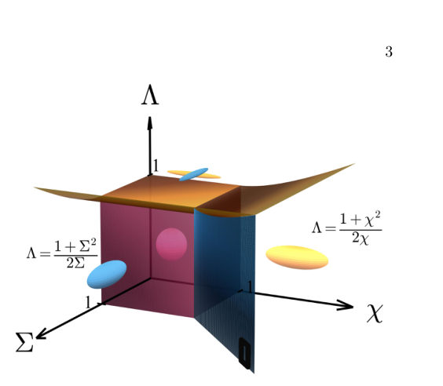
<figcaption class="paper-figure-caption"><b>Fig 1.</b> Figure 1. Phase diagram of the extended Agassi model. Second-order quantum phase transitions occur on the deep magenta vertical planes. First-order critical surfaces are in- dicated by the vibrant orange curved boundary, defined as Λ = 1 for χ &lt; 1 and Σ &lt; 1, Λ = (1 + χ2)/(2χ) for χ &gt; Σ, and Λ = (1 + Σ2)/(2Σ) for χ &lt; Σ, and by the deep cyan-blue vertical surface χ = Σ with Λ &lt; (1 + Σ2)/(2Σ). The sym- bols denote the symmetric (magenta sphere), HF deformed (orange oval), BCS deformed (blue oval), closed valley (black square outline), and combined HF-BCS deformed (crossed or- ange and cyan-blue ovals) phases Ref.[26].</figcaption>
</figure>
<figure class="paper-figure-card">
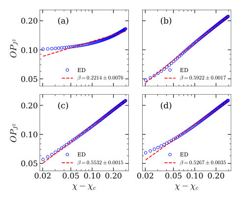
<figcaption class="paper-figure-caption"><b>Fig 2.</b> Figure 2. Scaling analysis of the equilibrium order parame- ter OPJ2 for the χ-driven transition in the extended Agassi model (The J2 refer to mathematical symmetry of coupling in mono-monopole term in Hamiltonian). Open circles denote exact-diagonalization (ED) results and dashed lines represent fits to OPJ2 ∝(χ−χc)β. Panels (a)–(d) correspond to j = 8, 100, 150, and 300, respectively. The critical couplings χc ap- proach the thermodynamic critical value χc = 1, while the extracted critical exponents converge toward the mean-field value β = 1/2. These results identify the symmetric-to-HF transition as a continuous quantum phase transition belong- ing to the mean-field universality class.</figcaption>
</figure>
<figure class="paper-figure-card">
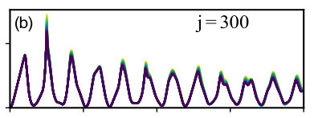
<figcaption class="paper-figure-caption"><b>Fig 3.</b> Figure 3. Loschmidt dynamics in the extended Agassi model following a sudden Σ quench for j = 300. (a) Loschmidt echo L(t) and (b) return-rate function λ(t) for a quench from Hi(Σi, χi, Λi) = H(0.5, 0.5, 0.0) to (Σf ∈[1.0, 2.0], χf = 1.5, Λf = 0.5). The quench crosses the equilibrium HF–BCS phase boundary at Σeq c = 1.5. A pronounced signature of a DQPT appears at Σf = 1.0.</figcaption>
</figure>
<figure class="paper-figure-card">
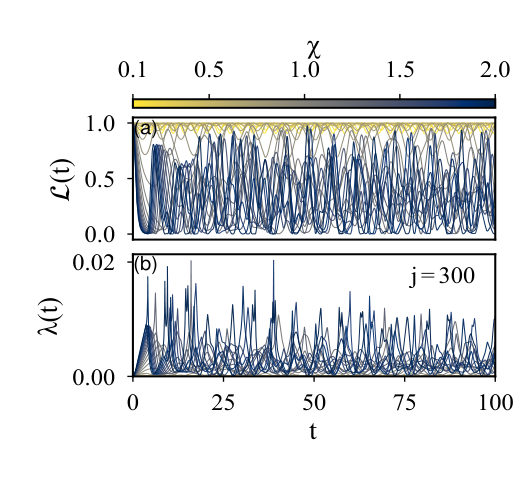
<figcaption class="paper-figure-caption"><b>Fig 4.</b> Figure 4. Loschmidt dynamics in the extended Agassi model following a sudden χ quench for j = 300. (a) Loschmidt echo L(t) and (b) return-rate function λ(t) for an initial state prepared at Hi = H(Σi, χi, Λi) = (0.5, 0.5, 0.0) and evolved under a final Hamiltonian with Σf = 0.5 and Λf = 0, while varying χf ∈[0.5, 2.5]. The quench trajectory crosses the equilibrium symmetric–HF phase boundary at χeq c = 1. The strongest signature of DQPT occurs at χf = 1.367.</figcaption>
</figure>
<figure class="paper-figure-card">
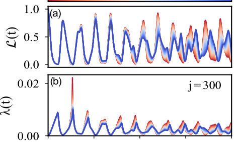
<figcaption class="paper-figure-caption"><b>Fig 5.</b> Figure 5. Loschmidt dynamics in the extended Agassi model following a sudden Λ quench for j = 300. (a) Loschmidt echo L(t) and (b) return-rate function λ(t) for an initial state pre- pared at Hi(Σi, χi, Λi) = H(0.5, 0.5, 0.0) and evolved under a final Hamiltonian with (Σf, χf) = (2.0, 1.5) while varying Λf ∈[1.0, 1.5]. The quench trajectory crosses the equilibrium first-order BCS–HF–BCS phase boundary at Λeq c = 1.25. The strongest signature of DQPT occurs at Λf = 1.0.</figcaption>
</figure>
</div>

<p><strong>Summary.</strong> This research explores Dynamical Quantum Phase Transitions (DQPTs) in the extended Agassi model by analyzing the time evolution after sudden parameter quenches. Using the Loschmidt echo and return-rate function, the authors distinguish between first-order and second-order-like DQPTs based on the non-analytic behavior of these observables. The findings reveal that the dynamical critical behavior is complex and depends distinctly on the specific pairing interaction being quenched.</p>
<p><strong>Why it may be interesting.</strong> This work provides a detailed, quantitative comparison between equilibrium and non-equilibrium critical phenomena in a solvable many-body model, which is highly relevant for understanding quench dynamics in quantum many-body systems.</p>
<details>
<summary>Detailed structure</summary>
<p><strong>Main problem.</strong> The paper investigates Nonequilibrium Dynamical Quantum Phase Transitions (DQPTs) in the extended Agassi model following sudden quenches across equilibrium phase boundaries.</p>
<p><strong>Main result.</strong> The study finds that the order of the DQPT (first-order vs. second-order-like) depends on the specific pairing strength quenched ($\Sigma, \chi, \Lambda$), demonstrating that dynamical criticality is not solely determined by the equilibrium transition order.</p>
<p><strong>Method.</strong> The dynamics are characterized using the Loschmidt echo and the intensive return-rate function, analyzed via exact diagonalization and finite-size scaling techniques.</p>
<p><strong>Model / system.</strong> The system is the extended Agassi model, describing N fermions in two energy levels, whose Hamiltonian incorporates tunable pairing strengths: same-level ($\Sigma$), monopole-monopole ($\chi$), and cross-level ($\Lambda$).</p>
<p><strong>Key observables.</strong> Loschmidt echo, intensive return-rate function, dynamical critical exponents ($\alpha$), and equilibrium critical exponents ($eta$).</p>
<p><strong>Important parameters / regimes.</strong> The quench parameters ($\Sigma, \chi, \Lambda$) and the system size ($j$), which is analyzed using finite-size scaling.</p>
<p><strong>Assumptions / limitations.</strong> The analysis relies on interpreting non-analyticities in the return rate's derivatives to determine the order of the transition, with results being noted as indicative pending full thermodynamic limit analysis.</p>
<p><strong>Figures summary.</strong> Figures illustrate the time evolution of the first and second derivatives of the return rate function ($\mathrm{d}\lambda/\mathrm{d}t$ and $\mathrm{d}^2\lambda/\mathrm{d}t^2$) for the three different quench protocols ($\Sigma, \chi, \Lambda$) across various finite system sizes ($j=8, 100, 150$).</p>
<p><strong>Paper structure.</strong> The paper progresses from establishing the equilibrium phase diagram and critical exponents ($eta$) to characterizing non-equilibrium dynamics using the Loschmidt echo and return-rate function for the three quench types, culminating in the extraction of distinct dynamical scaling exponents ($\alpha$).</p>
</details>
<details>
<summary>Abstract</summary>
<p>We investigate dynamical quantum phase transitions (DQPTs) in the extended Agassi model following sudden quenches of same level pairing ($Σ$), monopole-monopole ($χ$) and cross level pairing ($Λ$) strengths. Using exact diagonalization, we characterize the non-equilibrium dynamics through the Loschmidt echo and intensive return-rate function. Quenches across equilibrium phase boundaries produce cusp-like structures in the return rate that shows non-analyticities with increasing system size. Equilibrium finite size to large scaling identifies the $χ$-driven transition as a second order phase transition similar to mean-field, Dicke, and Lipkin-Meshkov-Glick (LMG) models critical behaviour with the exponent of the order parameter $β\simeq 1/2$, while the $Σ$- and $Λ$-driven transitions are first order. We further characterize the associated dynamical singularities through a local scaling exponent $α$, with $α_χ\simeq 2/3$, $α_Λ\simeq 1/3$, and $α_Σ\simeq 3/2$ of all three parameters. The distinct scaling behaviours across the parameter channels show that dynamical criticality is not determined solely by the equilibrium order of the transition, revealing multiple dynamical scaling regimes. These non-analyticities are associated with the Fisher zeros of the Loschmidt amplitude, which cross the real time axis at critical times and the time derivatives of the return-rate function to characterize the order of DQPTs within the extended Agassi model.</p>
</details>
<p><sub><a href="#top">↑ back to top</a></sub></p>

<p><a id="paper-2610.22738"></a></p>
<h3 id="programmable-preparation-of-topological-entangled-states"><a href="http://arxiv.org/abs/2610.22738v1">Programmable Preparation of Topological Entangled States</a></h3>
<p><strong>Authors:</strong> M. Javad Zakeri, Alaric Pan, Darren D Hudson, Andrea Blanco-Redondo<br>
<strong>Type:</strong> experiment · <strong>Category:</strong> quantum information and computing · <strong>PDF:</strong> <a href="https://arxiv.org/pdf/2610.22738v1">https://arxiv.org/pdf/2610.22738v1</a><br>
<strong>Analysis basis:</strong> full PDF text, analyzed in chunks
<strong>Topic relevance:</strong> 🔥 <code>quantum optics experiment</code> <strong>4/5</strong> · <code>QC/QI experiment</code> <strong>3/5</strong> · <code>analog quantum simulation</code> <strong>3/5</strong> · <code>interference shaping light</code> <strong>3/5</strong></p>
<div class="figure-strip-hint">↔ Scroll figures horizontally</div>
<div class="paper-figures-scroll">
<figure class="paper-figure-card">
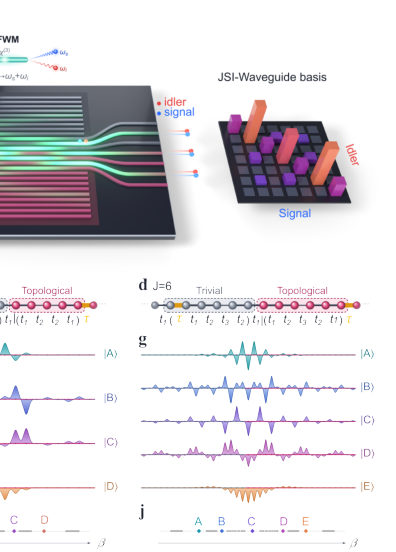
<figcaption class="paper-figure-caption"><b>Fig 1.</b> Fig. 1. Programmable silicon topological superlattice for high-dimensional biphoton generation. a, Schematic of the silicon photonic platform. Five pro- grammable pump inputs address the central interface region, seven output waveguides collect the generated signal–idler correlations. Independent amplitude and phase con- trol of the pump inputs prepares coherent excitations of the localized interface-mode manifold. Through SFWM, the programmed pump selects the nonlinear pathways that populate the output biphoton state. b–d, Coupling sequences of the J = 4 −6 super- lattices, respectively, formed by joining domains with distinct hopping patterns leading to distinct topologies. e–g,...</figcaption>
</figure>
<figure class="paper-figure-card">
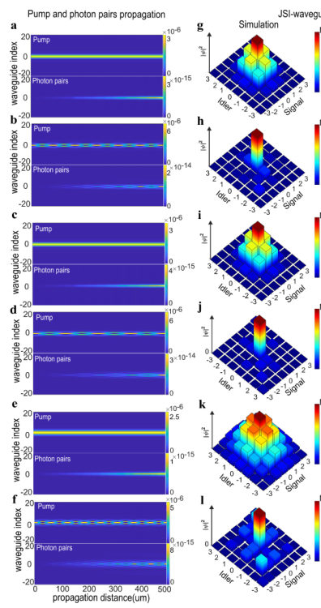
<figcaption class="paper-figure-caption"><b>Fig 2.</b> Fig. 2. Selective topological mode excitation. a,b, Pump and photon-pair prop- agation simulations in the J = 4 lattice for excitation profiles matching topological pump mode |C⟩and a coherent superposition |A⟩+|C⟩, respectively. c,d, Same in the J = 5 lattice with excitations matching topological pump mode |D⟩and |A⟩+ |D⟩, respectively. e,f, Same in the J = 6 lattice with excitations matching |E⟩and |A⟩+|E⟩, respectively. g–l, Simulated and measured output JSI in the waveguide basis −shown in the seven central waveguides, indexed from −3 to +3 with waveguide 0 at the center of the topological transition −for the six pump configurations in a–f. The simulations show the normalized intensity...</figcaption>
</figure>
<figure class="paper-figure-card">
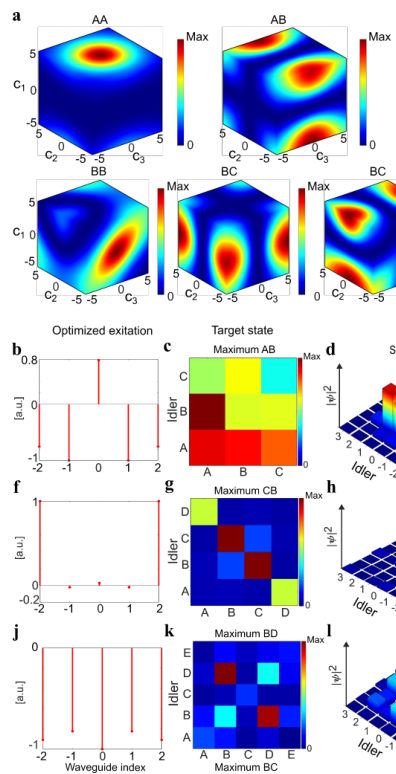
<figcaption class="paper-figure-caption"><b>Fig 3.</b> Fig. 3. Optimization-driven routing of biphoton correlations in topological- mode space. a, Pump-coefficient control landscape of the J = 4 lattice. Biphoton eigenmode populations of signal–idler blocks versus the coefficients (c1, c2, c3) of the coherent superposition of the three topological modes at fixed total power. b, Opti- mized pump excitation required to achieve a target quantum state with a local maximum probability at the off-diagonal block AB.c, Output BEP for such target quantum state at the output of the J = 4. d,e Simulated and measured output quan- tum states on the waveguide basis. f-i, j-m Same as b-e for the target quantum states shown in e and i sampling a variety of...</figcaption>
</figure>
<figure class="paper-figure-card">
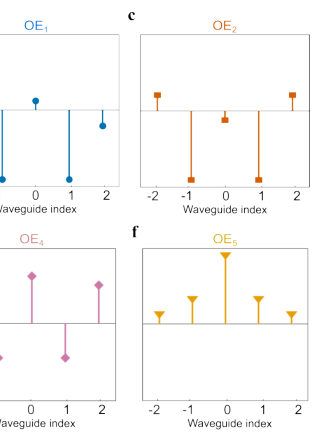
<figcaption class="paper-figure-caption"><b>Fig 4.</b> Fig. 4. Optimized excitation profiles for a targeted quantum state dimensionality (Ktarget = 5). a, Inverse-designed pump-control vectors c = (c1, c2, c3, c4, c5) of the J = 6 superlattice for the five solutions A–E with Ktarget = 5. b–f, Corresponding normalized launch profiles; colors as in a.</figcaption>
</figure>
<figure class="paper-figure-card">
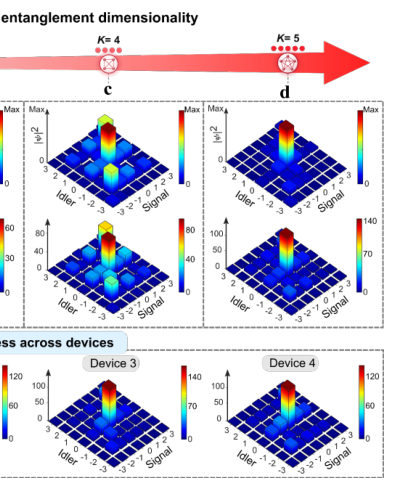
<figcaption class="paper-figure-caption"><b>Fig 5.</b> Fig. 5. Inverse-designed generation of high-dimensional topological bipho- ton entanglement. Spatially entangled signal–idler photon pairs are generated by spontaneous four-wave mixing in silicon topological superlattices. For each superlattice order J, the input pump is prepared as a coherent superposition of localized inter- face modes whose amplitudes are inverse-designed to synthesize a prescribed Schmidt number Ktarget. Coincidences are measured between the seven central output waveg- uides, indexed from −3 to +3, using superconducting-nanowire single-photon detectors over a 360 s integration time. a–d, Simulated and measured joint signal–idler inten- sity distributions for J = 6,...</figcaption>
</figure>
</div>

<p><strong>Summary.</strong> This paper demonstrates a method to programmatically generate high-dimensional topological entangled states using silicon photonic superlattices. By inverse-engineering the nonlinear pump profile, the researchers achieve deterministic control over the entanglement's dimensionality and modal structure. This work establishes a robust, scalable pathway for using topological photonics as a tailored quantum resource.</p>
<p><strong>Why it may be interesting.</strong> This work provides a concrete, hardware-implementable platform for generating high-dimensional entangled states, directly addressing a key resource requirement for quantum communication and computation.</p>
<details>
<summary>Detailed structure</summary>
<p><strong>Main problem.</strong> The central challenge is achieving programmable preparation of topological entangled quantum states, which is vital for scalable quantum information processing and quantum networking.</p>
<p><strong>Main result.</strong> The authors demonstrated deterministic control over the dimensionality and modal structure of generated entangled states by inverse-engineering the nonlinear optical pump profile in silicon photonic superlattices.</p>
<p><strong>Method.</strong> They used nonlinear optics (SFWM) in a topologically protected lattice, controlling the pump field via coherent superpositions of localized topological modes to steer the resulting biphoton correlations.</p>
<p><strong>Model / system.</strong> The physical system is a silicon photonic topological superlattice hosting a multiband manifold of co-localized topological interface modes. The process is modeled by coupled evolution equations governing the pump and the biphoton state.</p>
<p><strong>Key observables.</strong> Biphoton correlation maps (Joint Spatial Intensities), Schmidt number (K), and state fidelity.</p>
<p><strong>Important parameters / regimes.</strong> Lattice index (J=4, 5, 6), target Schmidt dimensionality (K_target), and disorder strength.</p>
<p><strong>Assumptions / limitations.</strong> The nonlinear process depends critically on the pump field squared, and the analysis relies on the ability to measure joint spatial intensity correlations.</p>
<p><strong>Figures summary.</strong> Figures illustrate the programmable lattice structure and coupling sequences, while supplementary figures show how different pump inputs can yield the same target Schmidt number but populate distinct correlation patterns.</p>
<p><strong>Paper structure.</strong> The paper establishes the need for programmability, details the physical platform and theoretical framework (including governing equations), demonstrates the control mechanism via pump shaping, and concludes by showing the robustness and systematic scaling of the achievable entanglement dimensionality.</p>
</details>
<details>
<summary>Abstract</summary>
<p>Programmable preparation of entangled quantum states is a central requirement for scalable quantum information processing, quantum networking and photonic quantum computing. Topological photonic platforms offer an attractive route towards robust quantum-state generation by encoding information in symmetry- protected optical modes, yet the generated entangled states are typically dictated by the lattice geometry and therefore lack programmability. Here we demonstrate programmable preparation of topological entangled states by inverse engineering the nonlinear optical pump profile of an integrated photonic lattice. Our approach enables deterministic control over both the dimensionality and modal structure of the generated entangled state while preserving its topological character. We experimentally realize silicon photonic topological superlattices in which the nonlinear generation pathway itself becomes programmable via tailored excitations. The superlattices host a multiband manifold of co localized topological interface modes, while coherently controlled inputs synthesize pump superpositions within this protected basis. We showcase this principle by selectively addressing topological biphoton eigenstates, steering correlations to produce a desired target state in a high-dimensional Hilbert space, and inverse-designing pump states that generate targeted Schmidt dimensionalities. Site-resolved two-photon correlation measurements remain reproducible across nominally identical fabricated devices, demonstrating robustness to realistic nanofabrication-induced disorder. Programmable preparation of topological entangled states establishes a pathway towards exploiting topological photonic modes as application-specific quantum resources, enabling tailored input states for high-dimensional quantum communication, quantum networking and photonic quantum computing.</p>
</details>
<p><sub><a href="#top">↑ back to top</a></sub></p>

<p><a id="paper-2610.23499"></a></p>
<h3 id="a-fibre-integrated-spdc-heralded-single-photon-source-using-zn-indiffused-ppln-ridge-waveguides-at-telecom-wavelengths"><a href="http://arxiv.org/abs/2610.23499v1">A Fibre-Integrated SPDC Heralded Single-Photon Source Using Zn-Indiffused PPLN Ridge Waveguides at Telecom Wavelengths</a></h3>
<p><strong>Authors:</strong> Peter Iveson, Paolo L. Mennea, Goronwy Tawy, Rex H. S. Bannerman, Noe Palomar-Davidson, Greg Blanchard-Emmerson, Patrick M. Ledingham, Peter G. R. Smith, James C. Gates, Corin B. E. Gawith<br>
<strong>Type:</strong> experiment · <strong>Category:</strong> quantum information and computing · <strong>PDF:</strong> <a href="https://arxiv.org/pdf/2610.23499v1">https://arxiv.org/pdf/2610.23499v1</a><br>
<strong>Analysis basis:</strong> full PDF text, analyzed in chunks
<strong>Topic relevance:</strong> 🔥 <code>quantum optics experiment</code> <strong>4/5</strong> · <code>QC/QI experiment</code> <strong>3/5</strong> · <code>interference shaping light</code> <strong>3/5</strong></p>
<div class="figure-strip-hint">↔ Scroll figures horizontally</div>
<div class="paper-figures-scroll">
<figure class="paper-figure-card">
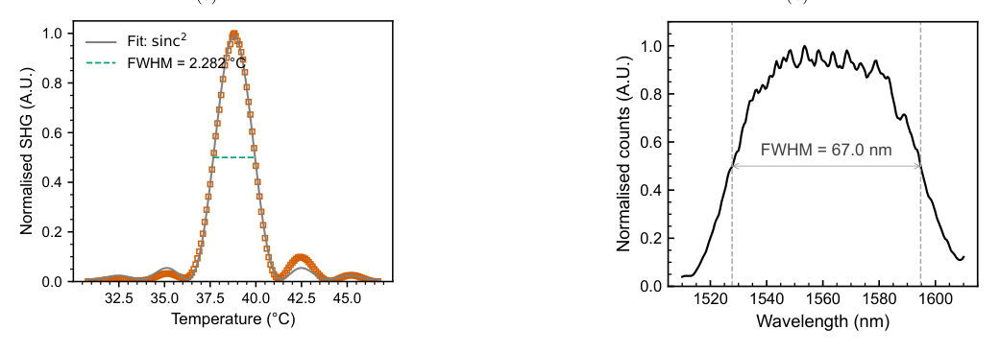
<figcaption class="paper-figure-caption"><b>Fig 1.</b> FIG. 2: SHG characterisation and SPDC spectral response. (a) SHG temperature acceptance. Fit yields T0 = 38.81 ◦C, FWHMT = 2.282 ◦C. Markers, data; orange curve, sinc2 fit; green dashed line, FWHM indication. (b) SPDC degenerate spectrum measured at T = 38.37 ◦C.</figcaption>
</figure>
<figure class="paper-figure-card">
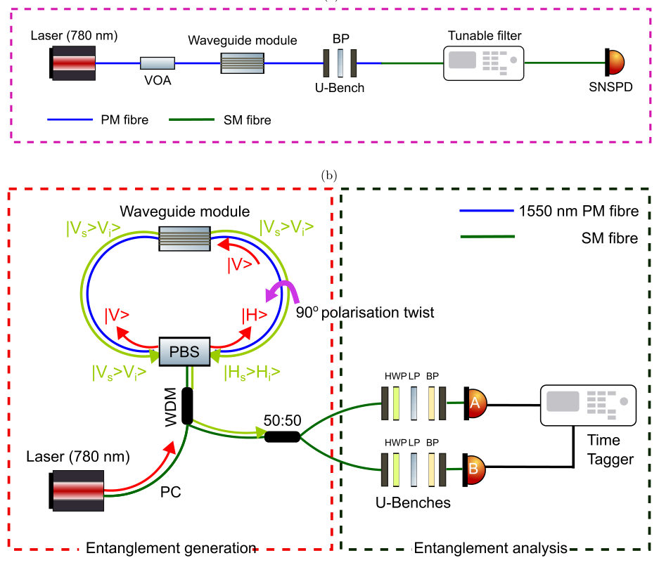
<figcaption class="paper-figure-caption"><b>Fig 2.</b> FIG. 3: Overview of the SPDC configurations. (a) Spectral characterisation with a tunable filter. (b) Experimental setup for polarisation entanglement in a Sagnac configuration using commercial components throughout. PM: polarisation-maintaining. SM: single-mode, PBS: fibre polarising beam splitter, VOA: variable optical attenuator, PC: Fibred polarisation controllers, WDM: Wavelength-division-multiplexer, BP: 1100 nm Longpass filter (broadband entanglement) / 1560 ± 6 nm Bandpass filter (narrowband entanglement). A: Alice, B:Bob SNSPD channels.</figcaption>
</figure>
<figure class="paper-figure-card">
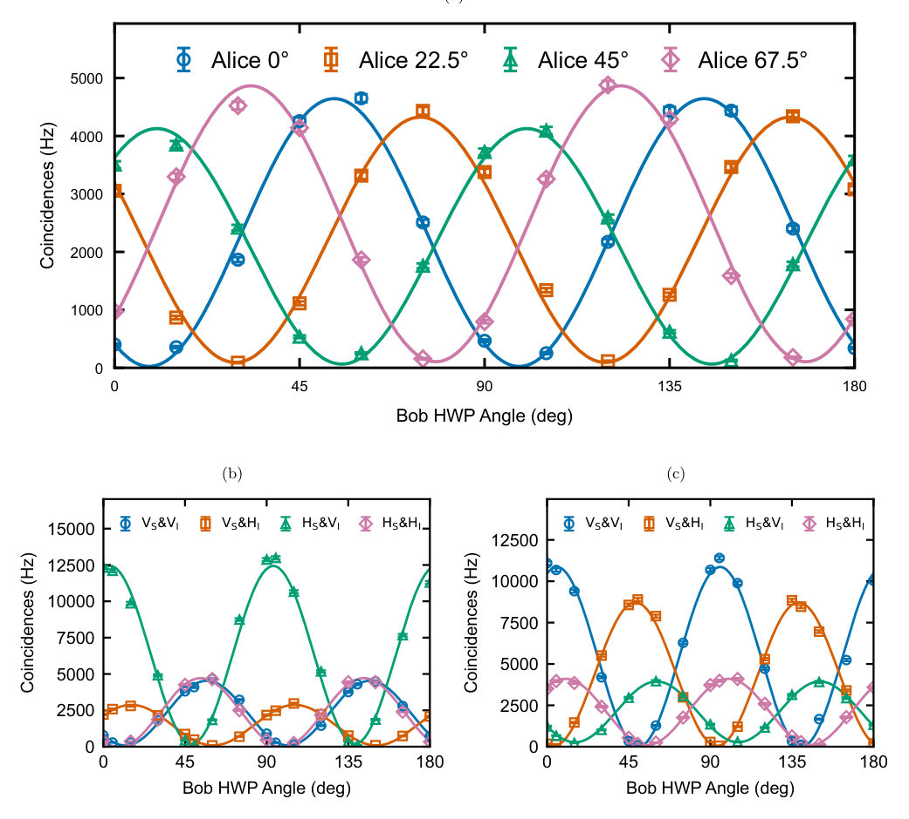
<figcaption class="paper-figure-caption"><b>Fig 3.</b> FIG. 4: Coincidence counts: (a) the Alice photon is projected in a linear polarisation basis and the Bob photon HWP angle is scanned. LP is set to H (90◦) for all measurements. (b) Visibility curves for Alice set to 0◦. (c) Visibility curves for Alice set to 45◦. Markers show the measured coincidence counts and the solid line gives the sinusoidal fit. Peaks are phase-shifted relative to the canonical |Φ+⟩expectation. Error bars assume Poissonian statistics. Legends in (b) and (c) show LP settings. LP: Linear polariser.</figcaption>
</figure>
<figure class="paper-figure-card">
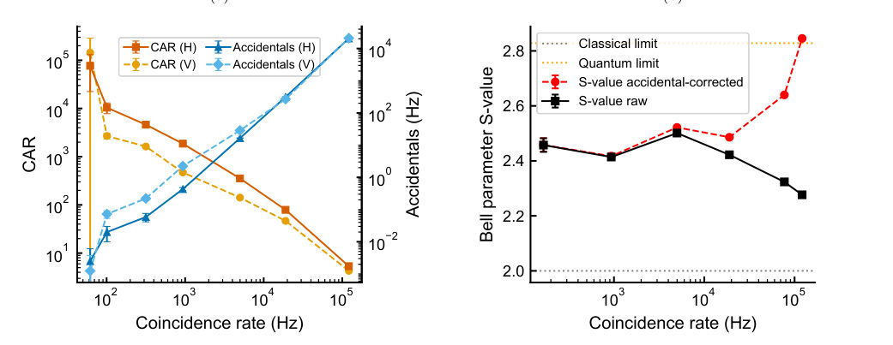
<figcaption class="paper-figure-caption"><b>Fig 4.</b> FIG. 5: Dependence of entanglement metrics on raw coincidence rate for broadband operation. (a) Measured CAR values and accidental coincidence rates in the H and V polarisation bases as a function of raw coincidence rate. (b) Raw and accidental-corrected CHSH Bell parameter as a function of raw coincidence rate. Error bars correspond to one standard deviation obtained from propagated counting statistics.</figcaption>
</figure>
<figure class="paper-figure-card">
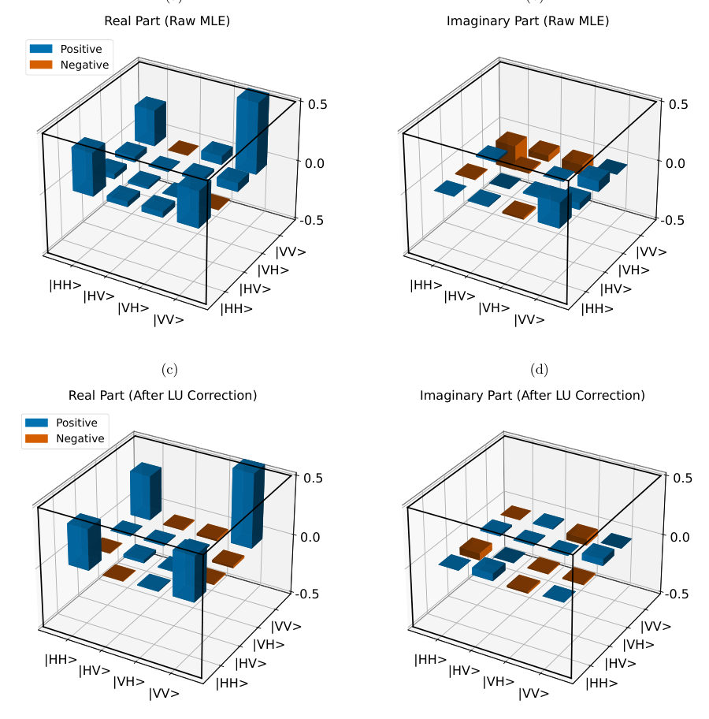
<figcaption class="paper-figure-caption"><b>Fig 5.</b> FIG. 6: Reconstructed density matrices. (a) Real and (b) imaginary components of the raw density matrix yielding a fidelity of 78.1% to the ideal |Φ+⟩Bell state. (c) Real and (d) imaginary components of the optimised density matrix, improving the fidelity to 85.6%.</figcaption>
</figure>
</div>

<p><strong>Summary.</strong> The authors report the creation of a fully fibre-integrated source for broadband, polarisation-entangled photon pairs using a PPLN waveguide. They demonstrated strong non-classical correlations by measuring a high CHSH parameter (S &gt; 2) and high interference visibility. This development is significant because it achieves high entanglement quality across a broad spectral range suitable for long-distance quantum communication.</p>
<p><strong>Why it may be interesting.</strong> This work provides a robust, scalable, and integrated platform for generating entangled photons at telecom wavelengths, which is crucial for practical quantum communication networks and quantum key distribution.</p>
<details>
<summary>Detailed structure</summary>
<p><strong>Main problem.</strong> The goal was to develop a fully fibre-integrated source of broadband polarisation-entangled photon pairs operating at telecom wavelengths.</p>
<p><strong>Main result.</strong> The source successfully generated high-quality entangled pairs, evidenced by a measured CHSH parameter of S = 2.501 and a high two-photon interference visibility of 96.9%.</p>
<p><strong>Method.</strong> The experiment utilized Spontaneous Parametric Down-Conversion (SPDC) within a Zn-indiffused PPLN ridge waveguide integrated into a Sagnac interferometer.</p>
<p><strong>Model / system.</strong> The physical system is a fibre-integrated Type-0 SPDC source using a Zn-indiffused MgO:PPLN ridge waveguide within a Sagnac interferometer setup. This platform allows for broadband operation across the full degenerate SPDC spectrum.</p>
<p><strong>Key observables.</strong> Two-photon interference visibility (96.9% $\pm$ 0.2%), CHSH Bell parameter (S = 2.501 $\pm$ 0.005), and broadband spectral bandwidth ($\sim 67$ nm FWHM).</p>
<p><strong>Important parameters / regimes.</strong> Telecom wavelengths, Type-0 SPDC process, and the violation of the classical Bell limit ($S>2$).</p>
<p><strong>Assumptions / limitations.</strong> The analysis must account for the limitations of accidental-corrected metrics at high source brightness, as these can inflate the Bell parameter beyond theoretical bounds.</p>
<p><strong>Figures summary.</strong> Figures illustrate the fibre-pigtailed waveguide module, the spectral response of the degenerate SPDC process, and the experimental setup for polarization entanglement using the Sagnac configuration.</p>
<p><strong>Paper structure.</strong> The paper details the characterization of the waveguide (SHG), the measurement of the broadband SPDC spectrum, and the subsequent quantification of entanglement quality using two-photon interference visibility, CHSH inequality violation, and state tomography.</p>
</details>
<details>
<summary>Abstract</summary>
<p>We demonstrate a fully fibre-integrated source of broadband polarisation-entangled photon pairs at telecom wavelengths based on a commercially available Zn-indiffused MgO:PPLN ridge waveguide incorporated within a Sagnac interferometer. Operating across the full degenerate SPDC spectrum using pump-suppression filtering only, the source exhibits a measured bandwidth of approximately 67 nm. Strong non-classical correlations are observed, with an average two-photon interference visibility of 96.9 +/- 0.2 %, a fidelity to the Phi + Bell state of 78.1 %, and a CHSH Bell parameter of S = 2.501 +/- 0.005. We further explore the effect of increasing source brightness on Bell-state performance, revealing the limitations of accidental-corrected metrics in high-flux operating regimes.</p>
</details>
<p><sub><a href="#top">↑ back to top</a></sub></p>

<p><a id="paper-2610.23810"></a></p>
<h3 id="experimental-demonstration-of-a-balanced-travelling-wave-parametric-amplifier"><a href="http://arxiv.org/abs/2610.23810v1">Experimental Demonstration of a Balanced Travelling Wave Parametric Amplifier</a></h3>
<p><strong>Authors:</strong> Nikita Klimovich, Peter K. Day, Henry G. Leduc, Boon-Kok Tan<br>
<strong>Type:</strong> experiment · <strong>Category:</strong> other · <strong>PDF:</strong> <a href="https://arxiv.org/pdf/2610.23810v1">https://arxiv.org/pdf/2610.23810v1</a><br>
<strong>Analysis basis:</strong> full PDF text, analyzed in chunks
<strong>Topic relevance:</strong> 🔥 <code>interference shaping light</code> <strong>4/5</strong> · <code>quantum optics experiment</code> <strong>3/5</strong> · <code>driven-dissipative phase transition</code> <strong>1/5</strong></p>
<div class="figure-strip-hint">↔ Scroll figures horizontally</div>
<div class="paper-figures-scroll">
<figure class="paper-figure-card">
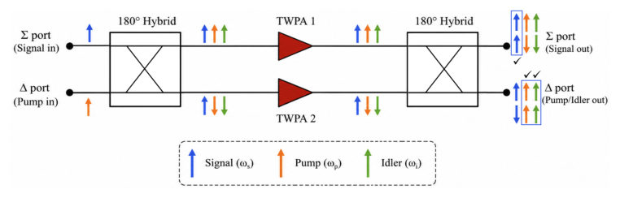
<figcaption class="paper-figure-caption"><b>Fig 1.</b> Figure 1. A schematic diagram showing a 3WM balanced TWPA configuration consisting of two identical TWPAs placed between two 180◦hybrids. Arrows indicate the phases of the signal, pump, and idler tones at various stages of the amplifier to demonstrate how the constructive and destructive interference in the two output ports results in signal, pump, and idler separation.</figcaption>
</figure>
<figure class="paper-figure-card">
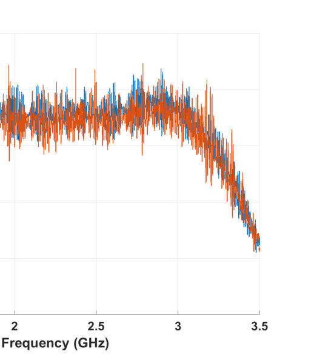
<figcaption class="paper-figure-caption"><b>Fig 2.</b> Figure 2. Individual gain profiles of the two TWPAs when supplied with an identical 4.75 GHz pump and 0.40 mA DC current.</figcaption>
</figure>
<figure class="paper-figure-card">
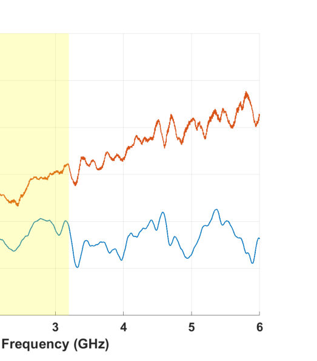
<figcaption class="paper-figure-caption"><b>Fig 3.</b> Figure 3. Experimentally measured signal leakage of the balanced TWPA configuration from Figure 1 without the TWPAs (blue) and with the TWPAs (red). The highlighted region represents the potential operating range of our balanced architecture.</figcaption>
</figure>
<figure class="paper-figure-card">
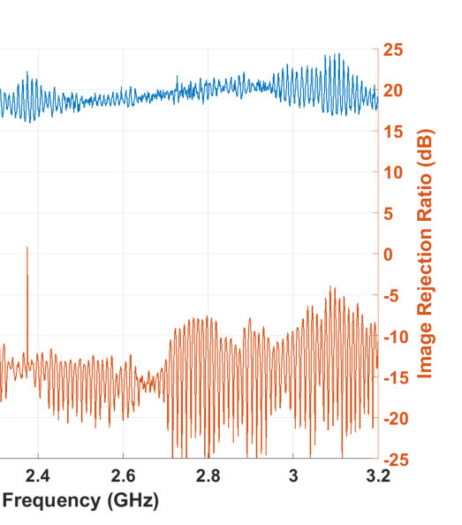
<figcaption class="paper-figure-caption"><b>Fig 4.</b> Figure 4. Gain (blue) and signal/idler rejection (red) for a balanced TWPA when optimizing for maximal idler rejection: 4.75 GHz pump and 0.88 mA DC current. Note that since the current is now split between the two TWPAs, the supplied current to the balanced configuration is roughly double the level used by each individual TWPA as shown in Figure 2.</figcaption>
</figure>
<figure class="paper-figure-card">
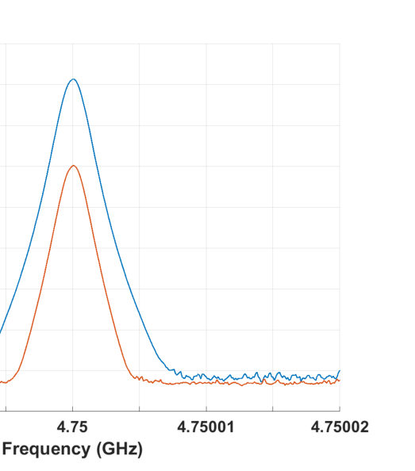
<figcaption class="paper-figure-caption"><b>Fig 5.</b> Figure 5. Pump tones measured using a spectrum analyser from the Δ output port (blue, the pump+idler port) and the Σ output port (red, the signal port) showing a pump rejection ratio, 𝑅𝑝= −21.37 dB.</figcaption>
</figure>
</div>

<p><strong>Summary.</strong> The paper presents an experimental demonstration of a balanced travelling-wave parametric amplifier (TWPA) designed to overcome spectral ambiguity. By using a specific two-amplifier, hybrid-coupled architecture, the setup successfully separates the amplified signal from unwanted pump and idler tones. This results in a broadband amplifier with high gain and excellent rejection ratios, making it ideal for complex quantum signal processing applications.</p>
<p><strong>Why it may be interesting.</strong> This work is highly relevant to quantum optics and open quantum systems as it presents a robust, high-bandwidth platform for parametric amplification, which is crucial for quantum signal processing and quantum measurement.</p>
<details>
<summary>Detailed structure</summary>
<p><strong>Main problem.</strong> Superconducting travelling-wave parametric amplifiers (TWPAs) suffer from spectral ambiguity due to idler tone generation at image frequencies, limiting their useful bandwidth.</p>
<p><strong>Main result.</strong> The authors experimentally demonstrated a balanced architecture that doubles the usable bandwidth by spatially separating the amplified signal from the pump and idler tones.</p>
<p><strong>Method.</strong> The technique involves connecting two TWPAs via $180^{\circ}$ hybrid couplers to achieve constructive signal interference at one output port and destructive interference for pump/idler at the other.</p>
<p><strong>Model / system.</strong> The system uses superconducting kinetic-inductance TWPAs operating via three-wave-mixing (3WM) in a balanced configuration. This architecture is designed to resolve sideband degeneracy inherent in standard TWPAs.</p>
<p><strong>Key observables.</strong> Signal gain ($\approx 20$ dB), pump rejection ($< -20$ dB), and average image rejection ($\approx -15$ dB) over nearly an octave bandwidth.</p>
<p><strong>Important parameters / regimes.</strong> The operating bandwidth is nearly an octave (e.g., 1.8–3.2 GHz); the performance is limited by fabrication imbalance ($\epsilon$).</p>
<p><strong>Assumptions / limitations.</strong> The analysis relies on the undepleted-pump approximation and the ability of the hybrid couplers to achieve precise $180^{\circ}$ phase shifts.</p>
<p><strong>Figures summary.</strong> Figures illustrate the schematic of the balanced TWPA, the gain profiles, and the measured rejection ratios for the pump and idler tones, confirming spectral separation.</p>
<p><strong>Paper structure.</strong> The paper introduces the problem of spectral ambiguity in TWPAs, details the balanced architecture using two TWPAs and hybrids, presents the theoretical separation mechanism, and concludes with experimental measurements demonstrating high gain and rejection ratios.</p>
</details>
<details>
<summary>Abstract</summary>
<p>Superconducting travelling-wave parametric amplifiers (TWPAs) provide broadband gain, low added noise, and high dynamic range, making them attractive for applications requiring wide instantaneous bandwidth. This is crucial for amplifying multiplexed narrow band signals spread over a wide frequency range, such as qubit resonator arrays, or amplifying inherently wide band signals, such as in spectrometers or radiometers. In many cases, however, the useful bandwidth of a TWPA is limited by the production of the idler tone at an image frequency. For three-wave-mixing (3WM) TWPAs, for example, an input signal at $f_s$ is indistinguishable from one at $f_p - f_s$, which can produce spectral ambiguity when the input spectrum is broadband or not known in advance. We experimentally demonstrate a balanced architecture that doubles the instantaneous image-rejected bandwidth available to a 3WM TWPA by spatially separating the amplified signal from the output pump and generated idler, which resolves the sideband degeneracy. The architecture consists of two amplifiers connected between a pair of 180$^{\circ}$ hybrid couplers, with the signal and pump injected and output through the sum and difference ports, respectively. Using two kinetic-inductance TWPAs, we demonstrate approximately 20 dB of signal gain across nearly an octave of bandwidth, together with pump rejection below --20 dB and an average image rejection of approximately --15 dB over the operating band. These results establish balanced TWPAs as a practical approach to broadband parametric amplification, enabling improved contamination free bandwidth and eliminating the need for complex filtering.</p>
</details>
<p><sub><a href="#top">↑ back to top</a></sub></p>

<p><a id="paper-2610.22691"></a></p>
<h3 id="quantum-classical-neural-networks-for-solving-lindblad-master-equations"><a href="http://arxiv.org/abs/2610.22691v1">Quantum-Classical Neural Networks for Solving Lindblad Master Equations</a></h3>
<p><strong>Authors:</strong> Rafael Florencio Díaz, Julio Guerrero García, Elvira Romera Gutiérrez<br>
<strong>Type:</strong> theory · <strong>Category:</strong> other · <strong>PDF:</strong> <a href="https://arxiv.org/pdf/2610.22691v1">https://arxiv.org/pdf/2610.22691v1</a><br>
<strong>Analysis basis:</strong> full PDF text, analyzed in chunks
<strong>Topic relevance:</strong> 🔥 <code>methods for driven-dissipative</code> <strong>4/5</strong> · <code>Keldysh / 2PI / non-Gaussian methods</code> <strong>1/5</strong> · <code>correlated / nonlocal dissipation</code> <strong>1/5</strong> · <code>driven-dissipative phase transition</code> <strong>1/5</strong> · <code>quantum measurements</code> <strong>1/5</strong></p>
<div class="figure-strip-hint">↔ Scroll figures horizontally</div>
<div class="paper-figures-scroll">
<figure class="paper-figure-card">
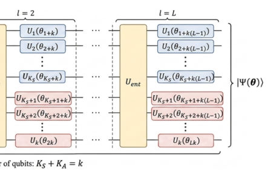
<figcaption class="paper-figure-caption"><b>Fig 1.</b> Fig. 1 Schematic representation of the quantum neural network (the case nrgq = 1 is shown for simplicity)</figcaption>
</figure>
<figure class="paper-figure-card">
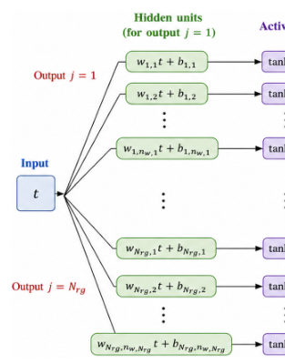
<figcaption class="paper-figure-caption"><b>Fig 2.</b> Fig. 2 Classical neural network schematic.</figcaption>
</figure>
<figure class="paper-figure-card">
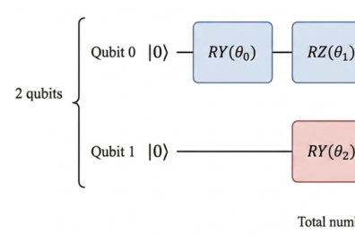
<figcaption class="paper-figure-caption"><b>Fig 3.</b> Fig. 3 Quantum neural network scheme of the two-qubit architecture used in the simulation.</figcaption>
</figure>
<figure class="paper-figure-card">
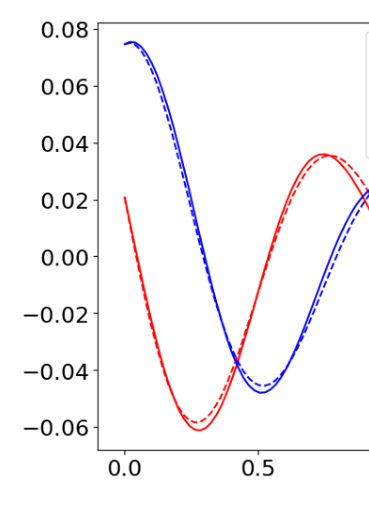
<figcaption class="paper-figure-caption"><b>Fig 4.</b> Fig. 4 Comparison between the expected values ⟨σx⟩and ⟨σy⟩as functions of time t, obtained from the analytic solution and from the proposed model in Figure 3 at the final iteration for nw = 34. Numerical results are those produced by the proposed model.</figcaption>
</figure>
<figure class="paper-figure-card">
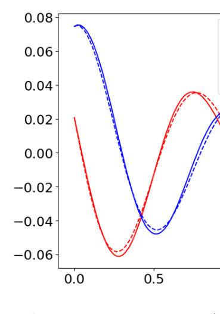
<figcaption class="paper-figure-caption"><b>Fig 5.</b> Figure 5 shows a comparison between the values of the cost function given in (38), as a function of the number of iterations of the gradient descent method, obtained using nw = 34, nw = 64, and nw = 124. The learning rate was fixed to η = 0.05. We observe that a greater reduction in the cost function values is achieved as nw increases, particularly from approximately 500 iterations onward. This result indicates that it is not necessary to increase the number of qubits to capture the damped oscillator behaviour of ⟨σx⟩and ⟨σy⟩; it is sufficient to increase the number of classical parameters nw.</figcaption>
</figure>
</div>

<p><strong>Summary.</strong> This paper introduces a novel Quantum-Classical Neural Network framework to solve the Lindblad master equation for open quantum systems. By combining a parameterized quantum circuit with a classical neural network, it creates a powerful variational model. The authors prove that this hybrid structure enhances expressivity and provides a practical method to overcome the barren plateau problem in quantum simulation.</p>
<p><strong>Why it may be interesting.</strong> This work provides a concrete, theoretically grounded machine learning tool for simulating complex open quantum dynamics, directly addressing the limitations of purely quantum variational algorithms in this domain.</p>
<details>
<summary>Detailed structure</summary>
<p><strong>Main problem.</strong> The paper addresses the challenge of simulating the time evolution of open quantum systems governed by the Lindblad master equation, which is computationally intractable due to the exponential scaling of the density matrix.</p>
<p><strong>Main result.</strong> The proposed hybrid Quantum-Classical Neural Network (QNN-CNN) framework successfully simulates dissipative dynamics while theoretically demonstrating that classical parametrization enlarges the model's expressivity and mitigates the barren plateau problem.</p>
<p><strong>Method.</strong> A variational approach is used, minimizing the residual of the Lindblad master equation by training a compositional ansatz combining a parameterized quantum circuit with a classical neural network via gradient descent.</p>
<p><strong>Model / system.</strong> The system is an open quantum system whose dynamics are described by the Lindblad master equation. The variational state is parameterized by combining a QNN evolution with a time-dependent trajectory governed by a CNN.</p>
<p><strong>Key observables.</strong> The Lindblad residual cost function, and time evolution of expectation values like $\langle\sigma_x
angle$ and $\langle\sigma_y
angle$.</p>
<p><strong>Important parameters / regimes.</strong> The number of classical parameters ($n_w$) and the number of qubits ($n_{rgq}$), which are compared to analyze scaling behavior.</p>
<p><strong>Assumptions / limitations.</strong> The density matrix is constructed via purification on an enlarged Hilbert space to guarantee physical constraints (positivity, Hermiticity, unit trace).</p>
<p><strong>Figures summary.</strong> Figures show the successful capture of damped oscillator behavior using CNN parameters, and demonstrate that using the local Lindblad cost function significantly reduces gradient variance compared to global observables, mitigating barren plateaus.</p>
<p><strong>Paper structure.</strong> The paper first introduces the variational formulation for the master equation, details the compositional ansatz (QNN+CNN) and the gradient calculation using the parameter-shift rule, and concludes with theoretical analysis of the covering number and numerical validation showing barren plateau mitigation.</p>
</details>
<details>
<summary>Abstract</summary>
<p>Variational quantum algorithms have emerged as a promising approach for simulating open quantum systems, yet their expressive power and trainability remain poorly understood. We propose a variational framework for solving Lindblad master equations by minimizing a residual cost function using a compositional ansatz obtained by combining a classical neural network with a parameterized quantum circuit. The density matrix is represented through a purification on an enlarged Hilbert space, ensuring positivity, Hermiticity, and unit trace by construction, while all gradients are evaluated exactly via the parameter-shift rule. Beyond the algorithmic formulation, we derive an upper bound for the covering number of the proposed compositional model and compare it with that of purely quantum neural networks. Our analysis shows that the classical parametrization enlarges the effective hypothesis class while providing finer control over its complexity, thereby establishing a theoretical connection between expressivity, covering numbers, effective dimension, and the barren plateau phenomenon. Numerical experiments validate both the accuracy of the proposed method for representative Lindblad master equations and the theoretical predictions regarding gradient concentration. These results provide a unified variational and theoretical framework for the simulation of dissipative quantum dynamics using compositional quantum machine learning models.</p>
</details>
<p><sub><a href="#top">↑ back to top</a></sub></p>

<p><a id="paper-2610.23208"></a></p>
<h3 id="exponential-swap-gate-between-bosonic-motional-modes-of-trapped-ions"><a href="http://arxiv.org/abs/2610.23208v1">Exponential-SWAP gate between bosonic motional modes of trapped ions</a></h3>
<p><strong>Authors:</strong> E. J. W. Koh, Rongjie Zhang, Dzmitry Matsukevich<br>
<strong>Type:</strong> experiment · <strong>Category:</strong> other · <strong>PDF:</strong> <a href="https://arxiv.org/pdf/2610.23208v1">https://arxiv.org/pdf/2610.23208v1</a><br>
<strong>Analysis basis:</strong> full PDF text, analyzed in chunks
<strong>Topic relevance:</strong> 🔥 <code>QC/QI experiment</code> <strong>4/5</strong> · <code>quantum measurements</code> <strong>2/5</strong> · <code>quantum optics experiment</code> <strong>1/5</strong></p>
<div class="figure-strip-hint">↔ Scroll figures horizontally</div>
<div class="paper-figures-scroll">
<figure class="paper-figure-card">

<figcaption class="paper-figure-caption"><b>Fig 1.</b> FIG. 1. Circuit diagram for the eSWAP gate and joint characteristic-function measurement. Modes a and b are the computa- tional motional modes, and mode c is an auxiliary mode initialized in |0⟩c. The Ry(−π</figcaption>
</figure>
<figure class="paper-figure-card">

<figcaption class="paper-figure-caption"><b>Fig 2.</b> FIG. 2. (a) Imaginary slices of the joint characteristic func- tion of (|0⟩(|0⟩+|1⟩)+i(|0⟩+|1⟩) |0⟩)/2. Each experimentally measured 40 × 40 slice contains data points averaged over 500 experimental repetitions. The data are compared with the prediction for an ideal eSWAP(−π</figcaption>
</figure>
<figure class="paper-figure-card">

<figcaption class="paper-figure-caption"><b>Fig 3.</b> FIG. 4. (a) Ideal and measured Re(α)-Re(β) slices of Im[χ(α, β)] at θ = π 2 over 100 experimental repetitions. (b) Measured (triangles) and simulated (curves) values of Im{[χ(±2γ, ∓2γ)]} as a function of θ, showing the expected 2π periodicity. Each data point is measured over 500 exper- imental repetitions and the error bars are plotted according to the binomial statistics of measurements.</figcaption>
</figure>
<figure class="paper-figure-card">

<figcaption class="paper-figure-caption"><b>Fig 4.</b> FIG. 3. Real slices of the joint characteristic function of (|1⟩|2⟩+i |2⟩|1⟩)/ √</figcaption>
</figure>
</div>

<p><strong>Summary.</strong> This paper reports the experimental realization of an exponential-SWAP (eSWAP) gate between the motional modes of trapped ions. By combining spin-dependent and spin-independent beam splitter interactions, the authors achieve a continuously tunable gate. The fidelity is verified by measuring the joint characteristic function, demonstrating its utility for hybrid qubit-bosonic quantum information processing.</p>
<p><strong>Why it may be interesting.</strong> This work provides a concrete, high-fidelity platform for implementing complex quantum gates (eSWAP) using motional modes, which is crucial for building scalable quantum processors based on trapped ions.</p>
<details>
<summary>Detailed structure</summary>
<p><strong>Main problem.</strong> The paper experimentally implements and characterizes the exponential-SWAP (eSWAP) gate between two bosonic motional modes of trapped ions.</p>
<p><strong>Main result.</strong> The measurement of the joint characteristic function confirms the continuous, tunable operation of the eSWAP gate, demonstrating coherent control over the identity-SWAP superposition.</p>
<p><strong>Method.</strong> The gate is realized using a sequence combining spin-independent and spin-dependent beam splitter interactions, and the fidelity is measured by analyzing selected slices of the joint characteristic function.</p>
<p><strong>Model / system.</strong> The physical system is trapped ions (specifically using ${}^{171}	ext{Yb}^+$) whose internal spin states interact with their quantized bosonic motional modes. The interactions are modeled using beam splitter Hamiltonians.</p>
<p><strong>Key observables.</strong> Joint characteristic function $\chi(\alpha, eta)$, expectation value of $\langle\hat{\sigma}_z
angle$, and the overlap $O_{	ext{exp}}$ between measured and ideal characteristic functions.</p>
<p><strong>Important parameters / regimes.</strong> The tunable angle $ heta$ of the eSWAP gate, and the measurement relies on characterizing the dependence of $\chi$ on this angle.</p>
<p><strong>Assumptions / limitations.</strong> The measurement focuses on selected slices of the joint characteristic function rather than full four-dimensional tomography due to time constraints.</p>
<p><strong>Figures summary.</strong> Figures illustrate the circuit diagram for the eSWAP gate and show comparisons between measured slices of the joint characteristic function (real and imaginary parts) for various input states against ideal theoretical predictions.</p>
<p><strong>Paper structure.</strong> The paper details the theoretical derivation of the eSWAP gate, outlines the experimental sequence involving beam splitters and spin rotations, and presents the measurement and analysis using the joint characteristic function to verify the gate operation and its tunability.</p>
</details>
<details>
<summary>Abstract</summary>
<p>The exponential-SWAP (eSWAP) gate generates a coherent superposition of identity and SWAP operations, with continuously tunable amplitudes. We experimentally implement this gate between two bosonic motional modes of trapped ions using spin-independent and spin-dependent beam splitter interactions. Measurements of selected slices of the joint characteristic function for distinct input states test the gate and demonstrate continuous control of the identity-SWAP superposition. This implementation provides a tunable interaction for hybrid qubit-bosonic quantum information processing.</p>
</details>
<p><sub><a href="#top">↑ back to top</a></sub></p>

<p><a id="paper-2610.23105"></a></p>
<h3 id="nonergodicity-from-hilbert-subspace-cloning"><a href="http://arxiv.org/abs/2610.23105v1">Nonergodicity from Hilbert-Subspace Cloning</a></h3>
<p><strong>Authors:</strong> Yuuya Chiba, Ryusuke Hamazaki<br>
<strong>Type:</strong> theory · <strong>Category:</strong> statistical mechanics · <strong>PDF:</strong> <a href="https://arxiv.org/pdf/2610.23105v1">https://arxiv.org/pdf/2610.23105v1</a><br>
<strong>Analysis basis:</strong> full PDF text, analyzed in chunks
<strong>Topic relevance:</strong> 🔥 <code>scars &amp; prethermalization</code> <strong>4/5</strong> · <code>analog quantum simulation</code> <strong>2/5</strong> · <code>non-equilibrium universality</code> <strong>1/5</strong></p>
<div class="figure-strip-hint">↔ Scroll figures horizontally</div>
<div class="paper-figures-scroll">
<figure class="paper-figure-card">

<figcaption class="paper-figure-caption"><b>Fig 1.</b> FIG. 1. Schematic illustration of our work. (a) Single- Pauli-string (SPS) Hamiltonian with an extensive number of noncommuting local conserved quantities. Each of the single Pauli operators gj in the Hamiltonian commutes with mutu- ally noncommuting local operators ¯gl at each site. (b) Hilbert- subspace cloning, which occurs at each global-symmetry sec- tor specified by λ. The Hamiltonian has a block diagonal- ized structure, where exponentially many number of identical chaotic Hamiltonians H(λ) act on the Hilbert subspaces, each of which has an exponentially large dimension. The energy eigenvalue E at each sector then has an exponentially large de- generacies, up to which the spectrum...</figcaption>
</figure>
<figure class="paper-figure-card">

<figcaption class="paper-figure-caption"><b>Fig 2.</b> FIG. 2. Distribution of the ratio of consecutive level spacings of H(λ) (orange triangles), which shows the chaotic behavior. The coupling constants bj’s defined in Eq. (1) are taken as nonzero irrational numbers that differ for each j (see [28] for the detailed parameters). The global-symmetry sector λ is chosen such that the eigenvalues of (V2, U3, U1, V5, U2, U4) are (−1, +1, +1, −1, +1, −1). The solid and dashed lines repre- sent the GOE and Poisson distributions, respectively.</figcaption>
</figure>
<figure class="paper-figure-card">

<figcaption class="paper-figure-caption"><b>Fig 3.</b> FIG. 3. Expectation value of a matrix P (λ) g on H(λ) g cor- responding to a Pauli string P = g1 in eigenstates |ν⟩λ of H(λ) with eigenenergy E(λ) ν . The coupling constants bj’s de- fined in Eq. (1) are taken as the same as in Fig. 2. The global-symmetry sector λ is chosen such that the eigenvalues of (V2, U3, U1, V5, U2, U4) are (−1, +1, +1, +1, +1, +1).</figcaption>
</figure>
</div>

<p><strong>Summary.</strong> This paper analyzes quantum many-body systems exhibiting Hilbert-subspace cloning, where the Hamiltonian acts on many disconnected, yet identical, subspaces. Despite the chaotic dynamics within each subspace, the global system fails to fully thermalize because quantum coherence between these subspaces is protected. The long-time state is thus described by a coherence-preserving partial Gibbs ensemble.</p>
<p><strong>Why it may be interesting.</strong> This work provides a concrete theoretical mechanism (HSC) for non-equilibrium steady states in quantum systems, which is crucial for understanding quantum memory and information storage in complex many-body settings.</p>
<details>
<summary>Detailed structure</summary>
<p><strong>Main problem.</strong> The paper investigates how exponentially large spectral degeneracies in quantum many-body systems can lead to nonergodicity, protecting quantum coherence from local thermalization.</p>
<p><strong>Main result.</strong> The system exhibits Hilbert-subspace cloning, leading to a long-time steady state described by a coherence-preserving partial Gibbs ensemble, which differs from the standard thermal ensemble.</p>
<p><strong>Method.</strong> The authors analyze the structure imposed by local conserved quantities, applying concepts from quantum chaos (GOE statistics) and testing for thermalization using the Eigenstate Thermalization Hypothesis (ETH).</p>
<p><strong>Model / system.</strong> The model is a single-Pauli-string (SPS) system on a 1D lattice of spin-1/2 spins, governed by a Hamiltonian constructed from Pauli strings. The system decomposes into exponentially many disconnected, yet identical, subspaces.</p>
<p><strong>Key observables.</strong> Local observables, level spacing ratio distribution (GOE confirmation), and expectation values of local Pauli strings in eigenstates.</p>
<p><strong>Important parameters / regimes.</strong> The system size L, the coupling strengths (implicit in the Pauli strings), and the temperature/inverse temperature $eta$ (implied by the Gibbs ensemble).</p>
<p><strong>Assumptions / limitations.</strong> The analysis assumes the validity of ETH for the individual subspace Hamiltonians $H(\lambda)$ and focuses on the inversion-asymmetric case.</p>
<p><strong>Figures summary.</strong> Figure 2 shows level spacing ratios following the GOE distribution, confirming quantum chaoticity. Figure 3 shows the expectation value of local operators converging smoothly, confirming ETH.</p>
<p><strong>Paper structure.</strong> The paper first establishes the block-diagonal structure due to conserved quantities, then uses chaos diagnostics (level spacing) to confirm the chaotic nature of the individual subspaces. Finally, it analyzes the long-time dynamics, showing the deviation from standard thermalization towards a coherence-preserving partial Gibbs state.</p>
</details>
<details>
<summary>Abstract</summary>
<p>We identify a class of nonintegrable quantum many-body systems composed of single Pauli strings that possess an extensive number of noncommuting local conserved quantities and exhibit partial ergodicity breaking due to exponentially degenerate energy spectra. We show that such systems exhibit a novel mechanism, Hilbert-subspace cloning, where the identical chaotic Hamiltonian acts on each of exponentially many disconnected Hilbert subspaces. Although the dynamics within each clone thermalizes, quantum coherence between clones remains protected and detectable by local observables. Consequently, the long-time behavior of local observables is described by a coherence-preserving partial Gibbs ensemble, where the hidden subsystem retains its initial quantum coherence.</p>
</details>
<p><sub><a href="#top">↑ back to top</a></sub></p>

<p><a id="paper-2610.22954"></a></p>
<h3 id="quantum-assisted-unambiguous-discrimination-of-pure-states-with-robustness-bounds"><a href="http://arxiv.org/abs/2610.22954v1">Quantum-Assisted Unambiguous Discrimination of Pure States with Robustness Bounds</a></h3>
<p><strong>Authors:</strong> Jinhyeok Heo, Dongkeun Lee, Junghee Ryu, Minjin Choi<br>
<strong>Type:</strong> both · <strong>Category:</strong> quantum information and computing · <strong>PDF:</strong> <a href="https://arxiv.org/pdf/2610.22954v1">https://arxiv.org/pdf/2610.22954v1</a><br>
<strong>Analysis basis:</strong> full PDF text, analyzed in chunks
<strong>Topic relevance:</strong> 🔥 <code>quantum measurements</code> <strong>4/5</strong> · <code>QC/QI experiment</code> <strong>3/5</strong></p>
<div class="figure-strip-hint">↔ Scroll figures horizontally</div>
<div class="paper-figures-scroll">
<figure class="paper-figure-card">

<figcaption class="paper-figure-caption"><b>Fig 1.</b> FIG. 1: Hybrid quantum-classical workflow for NSS-based pure- state unambiguous discrimination. Discriminated states {|ϕk⟩} (top left), prepared by {Uk} with probabilities {ηk}, are processed within the NSS framework (right) in three steps. (1) The ansatz states are set to coincide with the discriminated states, |ψk⟩= |ϕk⟩. (2) The Gram matrix E, with entries Ek,ℓ= ⟨ϕk|ϕℓ⟩, is estimated via quantum circuits. The illustrated Hadamard-test circuit estimates the real part of the overlap. (3) The reduced SDP in Eq. (13) is solved classically to obtain the scalars {qn}. The optimal POVM (bottom left) is con- structed from E and {qn} through Eqs. (9) and (10).</figcaption>
</figure>
<figure class="paper-figure-card">

<figcaption class="paper-figure-caption"><b>Fig 2.</b> FIG. 2: Quantum circuits used in the numerical simulations. (a) State preparation circuit for generating the discriminated state |ϕk⟩using a three-qubit, two-layer HEA consisting of RY rotations and CNOT gates. The prepared states are real-valued, and thus their pairwise overlaps Ek,ℓ= ⟨ϕk|ϕℓ⟩are real. (b) Overlap estimation circuit for computing Ek,ℓ, obtained from the measurement outcome on the ancilla.</figcaption>
</figure>
<figure class="paper-figure-card">

<figcaption class="paper-figure-caption"><b>Fig 3.</b> FIG. 3: Numerical validation of the robustness bounds for ensembles of N = 2, 3, 4 pure states, generated using the three-qubit, two-layer ansatz circuit in Fig. 2(a), with equal prior probabilities. Panels (a)–(c) show the relative error RP in the average success probability and the bound in Eq. (43). Panels (d)–(f) show the maximum misidentification probability, maxk,n ⟨ϕk| b Mn |ϕk⟩, and the bound obtained by maximizing the right-hand side of Eq. (31) over k , n. For each N, one randomly generated state ensemble is fixed, and 100 perturbation strengths ε are sampled log-uniformly from [10−4, 5 × 10−2]. For each ε, an independent real symmetric perturbation ∆E with zero diagonal and ∥∆E∥2...</figcaption>
</figure>
<figure class="paper-figure-card">

<figcaption class="paper-figure-caption"><b>Fig 4.</b> FIG. 4: Finite-shot errors in Gram-matrix estimation for the same three-qubit ensembles used in Fig. 3, with N ∈{2, 3, 4}, in the ab- sence of circuit noise. Markers show the mean spectral-norm error ∥∆E∥2 over 500 independent repetitions at each shot count, and lines show the Hoeffding bounds with failure probability α = 0.05.</figcaption>
</figure>
</div>

<p><strong>Summary.</strong> This paper presents a hybrid quantum-classical method for unambiguously discriminating pure quantum states. It combines the NSS solver with a reciprocal-state representation to simplify the optimization problem significantly. Crucially, the authors derive robust theoretical bounds that quantify performance degradation due to errors in estimating state overlaps on quantum hardware.</p>
<p><strong>Why it may be interesting.</strong> This work directly tackles the practical implementation of quantum information protocols on NISQ devices by providing rigorous error bounds for state discrimination, which is crucial for quantum communication and sensing.</p>
<details>
<summary>Detailed structure</summary>
<p><strong>Main problem.</strong> The paper addresses the fundamental task of unambiguously discriminating between a set of unknown pure quantum states from an ensemble.</p>
<p><strong>Main result.</strong> They propose a hybrid quantum-classical framework that simplifies the optimization problem by using the reciprocal-state representation, and they establish robust bounds against errors in estimating the state overlaps.</p>
<p><strong>Method.</strong> The method combines the Noisy Intermediate-Scale Quantum (NSS) semidefinite program solver with the reciprocal-state representation to reduce the optimization variables from a general matrix form to a set of scalars.</p>
<p><strong>Model / system.</strong> The system involves an ensemble of pure quantum states, $|\phi_k
angle$, whose overlaps are estimated using quantum circuits on hardware like the IBM quantum processor. The goal is to find an optimal Positive Operator-Valued Measure (POVM).</p>
<p><strong>Key observables.</strong> Average conclusive success probability, violations of the no-error condition, and the estimated Gram matrix $E$ (pairwise overlaps).</p>
<p><strong>Important parameters / regimes.</strong> The number of states ($N$), the preparation probabilities ($\{\eta_k\}$), and the bound on Gram matrix estimation error ($\epsilon$).</p>
<p><strong>Assumptions / limitations.</strong> The framework assumes the ability to estimate the Gram matrix from quantum measurements and relies on a rescaling procedure to guarantee a valid POVM despite estimation errors.</p>
<p><strong>Figures summary.</strong> Figure 1 illustrates the three-step hybrid workflow: ansatz selection, quantum estimation of overlaps (Gram matrix $E$), and classical optimization for the POVM elements. Figure 4 shows finite-shot scaling of estimation errors.</p>
<p><strong>Paper structure.</strong> The paper first formulates the problem as an SDP, then introduces the hybrid NSS approach, significantly simplifies it using the reciprocal-state representation, derives robustness bounds against noise, and finally validates the approach through numerical simulations and experiments on quantum hardware.</p>
</details>
<details>
<summary>Abstract</summary>
<p>We propose a hybrid quantum-classical framework for the unambiguous discrimination of pure states by combining the noisy intermediate-scale quantum semidefinite program solver (NSS) with the reciprocal-state representation. In NSS, a given semidefinite program (SDP) is represented within a subspace spanned by chosen ansatz states, with the required quantities estimated using quantum circuits, and the resulting optimization is performed classically. This makes NSS naturally applicable to discrimination problems involving circuit-prepared states, as finding a discrimination measurement can be formulated as an SDP. By choosing the discriminated states themselves as the ansatz and exploiting the reciprocal-state representation, the general matrix-variable NSS formulation is reduced to an optimization over N scalar variables, where N is the number of discriminated states. The resulting formulation reduces the number of optimization variables and positive-semidefinite constraints compared with the original NSS formulation. We further establish robustness guarantees against Gram matrix estimation errors, including a rescaling procedure that guarantees a valid positive operator-valued measure (POVM) under bounded perturbations. The resulting bounds quantify both the deviation in average success probability and violations of the no-error condition using only the estimated Gram matrix, its SDP solution, and a characterized perturbation bound, without access to the ideal Gram matrix. Numerical simulations validate the derived robustness bounds and characterize finite-shot scaling. We also perform experiments on IBM quantum hardware to estimate pairwise overlaps, and then evaluate the performance of the resulting POVMs.</p>
</details>
<p><sub><a href="#top">↑ back to top</a></sub></p>

<p><a id="paper-2610.23316"></a></p>
<h3 id="spincontrol-control-software-for-prototyping-and-benchmarking-of-spin-qubit-devices-and-measurement-protocols"><a href="http://arxiv.org/abs/2610.23316v1">SpinControl: Control Software for Prototyping and Benchmarking of Spin-Qubit Devices and Measurement Protocols</a></h3>
<p><strong>Authors:</strong> Harold B. Meerwaldt, Daniël P. van der Velde, Pieter T. Eendebak, Michiel J. Haye<br>
<strong>Type:</strong> experiment · <strong>Category:</strong> quantum information and computing · <strong>PDF:</strong> <a href="https://arxiv.org/pdf/2610.23316v1">https://arxiv.org/pdf/2610.23316v1</a><br>
<strong>Analysis basis:</strong> full PDF text, analyzed in chunks
<strong>Topic relevance:</strong> 🔥 <code>QC/QI experiment</code> <strong>4/5</strong> · <code>quantum measurements</code> <strong>3/5</strong></p>
<div class="figure-strip-hint">↔ Scroll figures horizontally</div>
<div class="paper-figures-scroll">
<figure class="paper-figure-card">

<figcaption class="paper-figure-caption"><b>Fig 1.</b> FIGURE 1. High-level overview of operation of a spin-qubit system using SpinControl</figcaption>
</figure>
<figure class="paper-figure-card">

<figcaption class="paper-figure-caption"><b>Fig 2.</b> FIGURE 2. Dependencies between Python packages in SpinControl</figcaption>
</figure>
<figure class="paper-figure-card">

<figcaption class="paper-figure-caption"><b>Fig 3.</b> FIGURE 3. Dependencies between components in SpinControl</figcaption>
</figure>
<figure class="paper-figure-card">

<figcaption class="paper-figure-caption"><b>Fig 4.</b> FIGURE 4. Class diagram of InstrumentManager, Instrument, and related classes</figcaption>
</figure>
<figure class="paper-figure-card">

<figcaption class="paper-figure-caption"><b>Fig 5.</b> FIGURE 5. Data flow diagram from circuit-level or cQASM program to acquisitions. A circuit-level program or cQASM string is passed to the CircuitCompiler, which passes the circuit-level program untouched or converts the cQASM string into a circuit-level program. The DeviceManager converts the circuit-level program into a pulse program using settings from a datastore. The PulseCompiler converts the pulse program into instrument-dependent pulse instructions, which are executed on the instruments, returning acquisitions.</figcaption>
</figure>
</div>

<p><strong>Summary.</strong> This paper introduces SpinControl, a sophisticated software framework tailored for controlling and benchmarking semiconductor spin-qubit quantum devices. It solves the challenge of integrating low-level hardware control with high-level quantum algorithm needs through a modular, customizable, and robust architecture. This tool standardizes the experimental process, making it easier for researchers to prototype and execute complex quantum measurements.</p>
<p><strong>Why it may be interesting.</strong> It provides a concrete, software-centric solution for controlling solid-state qubits, which is crucial for experimentalists working on quantum hardware platforms that bridge theory and physical realization.</p>
<details>
<summary>Detailed structure</summary>
<p><strong>Main problem.</strong> The control software for quantum computing is becoming overly complex due to the need to manage intricate qubit actions, calibration, and benchmarking procedures.</p>
<p><strong>Main result.</strong> The authors present SpinControl, a comprehensive, modular, and robust software framework designed to manage the entire lifecycle of spin-qubit quantum experiments.</p>
<p><strong>Method.</strong> The software design integrates three core metrics—customizability, modularity, and robustness—by separating data from behavior and structuring functionality into distinct, interconnected Python components.</p>
<p><strong>Model / system.</strong> The system is designed for semiconductor spin-qubit quantum computers, requiring low-level access for experimental tuning while supporting high-level circuit execution for algorithm researchers.</p>
<p><strong>Key observables.</strong> Single-qubit states, multi-qubit bitstrings, calibration parameters, and measurement results derived from pulse sequences.</p>
<p><strong>Important parameters / regimes.</strong> Pulse parameters (voltages, timing), circuit gate definitions (cQASM), and operational regimes for calibration and benchmarking.</p>
<p><strong>Assumptions / limitations.</strong> The development assumes the availability of underlying hardware control via instrument drivers (like those using qcodes) and relies on established quantum programming paradigms.</p>
<p><strong>Figures summary.</strong> Figures illustrate the high-level system architecture, the component dependencies within the software, and the data flow from high-level circuit definitions down to physical pulse acquisitions.</p>
<p><strong>Paper structure.</strong> The paper details the architecture by presenting the core components (InstrumentManager, Compilers, MeasurementManager), explaining the data flow from circuit definition to measurement execution, and concluding with the overall system orchestration and GUI tools.</p>
</details>
<details>
<summary>Abstract</summary>
<p>Quantum computers require software to control the states of the qubits. As the actions on qubits grow in complexity with circuit execution, calibration, and benchmarking, the complexity of the control software grows in tandem. Spin-qubit quantum computers are at a stage where experimentalists need low-level access for tuning and calibration, and quantum algorithm researchers want high-level circuit-level access. In this article, we present the software design of SpinControl. SpinControl integrates three architectural metrics: 1) customizability, to allow prototyping devices and measurement protocols, is achieved by separating data and behaviour; 2) modularity and extensibility are achieved by separating functionalities into different components; and 3) robustness, to reliably execute quantum circuits on many qubits, is achieved by CI pipelines and input validation. SpinControl allows different types of measurements while customizing the instruments used, the pulse or circuit program executed, and the data processing. It allows building standardized experiments from measurement and analysis building blocks and executing these for calibration in a custom and conditional order. SpinControl implements these functionalities alongside robust configuration and data management, a connection to the cloud, and calibration scheduling. Pulse and circuit compilation, virtual gate matrices, as well as spin-qubit-specific GUIs integrated by SpinControl, make heavy use of software packages developed by Delft University of Technology: pulse lib, core-tools (both open source), and QConstruct</p>
</details>
<p><sub><a href="#top">↑ back to top</a></sub></p>

<p><a id="paper-2610.23840"></a></p>
<h3 id="demonstration-of-logical-error-suppression-in-a-surface-code-memory-on-a-cloud-accessible-ibm-superconducting-processor"><a href="http://arxiv.org/abs/2610.23840v1">Demonstration of Logical Error Suppression in a Surface Code Memory on a Cloud-Accessible IBM Superconducting Processor</a></h3>
<p><strong>Authors:</strong> Shuwen Kan, Aaron Hoyt, Sean Garner, Ethan Vo, Adrian Harkness, Rod Rofougaran, Zefan Du, Chenxu Liu, Norm Tubman, Ying Mao, Samuel Stein<br>
<strong>Type:</strong> experiment · <strong>Category:</strong> quantum information and computing · <strong>PDF:</strong> <a href="https://arxiv.org/pdf/2610.23840v1">https://arxiv.org/pdf/2610.23840v1</a><br>
<strong>Analysis basis:</strong> full PDF text, analyzed in chunks
<strong>Topic relevance:</strong> 🔥 <code>QC/QI experiment</code> <strong>4/5</strong> · <code>quantum measurements</code> <strong>2/5</strong></p>
<div class="figure-strip-hint">↔ Scroll figures horizontally</div>
<div class="paper-figures-scroll">
<figure class="paper-figure-card">

<figcaption class="paper-figure-caption"><b>Fig 1.</b> FIG. 1. Device and rotated surface-code performance. Increasing the protected distance lowers the logical error per round in both memories for the selected rectangular patches. (a) The processor and selected placement, with qubits coloured by readout error and couplers by controlled-Z (CZ) gate error. (b) Check detection probabilities for 44 placements, pooling both memories. (c), (d) Z- and X-memory logical error probability (LEP) versus rounds at other distance 3, using exact maximum- likelihood decoding on all 20 000 shots. Insets show ε versus protected distance, with fits used to estimate the suppression factor Λ. (e) Calibration and detection-probability distributions, with dashed...</figcaption>
</figure>
<figure class="paper-figure-card">

<figcaption class="paper-figure-caption"><b>Fig 2.</b> FIG. 2. Readout-window duration. Shorter readout lowers logical errors and space-like pair probabilities, with phase-pair changes exceeding the idle-decoherence prediction. (a) Ancilla schedules with no reset, separate reset or fused measurement and reset. (b), (c) Z- and X-memory ε versus readout duration. Faint points show individual placements and prominent markers their means. Labels give fractional changes. (d) Measured reductions in space-like pij versus predictions from the shared data qubit’s calibrated T1 or T2. Markers distinguish placements, the dotted line denotes equality, and annotations give measured and predicted medians. Error bars in (b,c) are 95 % intervals from 200...</figcaption>
</figure>
<figure class="paper-figure-card">

<figcaption class="paper-figure-caption"><b>Fig 3.</b> FIG. 3. Reset at equal round duration. Both reset schemes reduce long-tail correlations, while fused reset also lowers X-memory logical error at matched round duration. (a) Ancilla schedules padded to a common 2.79 µs round. (b) Mean ε across three placements. (c) Excess neighbouring X-check activity after recorded ancilla readout 1 versus 0, relative to non- neighbouring checks, before and after weighting by the read-1 fraction. (d) Detector-pair classes. (e), (f) Long-tail pij without reset versus separate and fused reset, respectively. Points above equality have smaller correlations with reset. Insets enlarge the low-correlation region. Tail offsets account for each circuit’s...</figcaption>
</figure>
<figure class="paper-figure-card">

<figcaption class="paper-figure-caption"><b>Fig 4.</b> FIG. 4. Idle placement within syndrome extraction. The same inserted delay produces larger logical errors and hook- class correlations within the round than between rounds. (a) Delay positions after the second entangling layer or after ancilla readout, with illustrative fault propagation. (b) Z-memory ε versus inserted delay: solid lines and filled markers denote within- round insertion; dashed lines and open markers denote between-round insertion. (c), (d) Corresponding class-averaged pij, using a common scale. Measurements use the selected placement. Fig. 22 shows the complementary X-memory comparison. Error bars are 95 % intervals from 200 binomial resamples of each round count (b) and...</figcaption>
</figure>
<figure class="paper-figure-card">

<figcaption class="paper-figure-caption"><b>Fig 5.</b> FIG. 5. Dynamical decoupling during readout. The echo lowers X-memory logical error, while extending it beyond readout raises the error in both memories. (a) X–X sequences during fused readout, with hatched segments beyond the readout window. (b) ε versus nominal echo length in Z and X memory (zero: no-echo control). (c) Detection probability of each memory’s check family. (d) Same-check long-tail pij, averaged over both memories, for X-checks and Z-checks. Dotted lines mark the readout duration. Nominal lengths exclude pulse durations. Longer sequences extend the enclosing round. Error bars are 95 % intervals from 200 binomial resamples of each round count (b) or from 200 whole-shot...</figcaption>
</figure>
</div>

<p><strong>Summary.</strong> This work reports on achieving logical error suppression in a surface code memory on a superconducting quantum processor by optimizing the syndrome extraction circuit. Key optimizations, such as using fused measurement and reset, substantially lowered the logical error rate. The results highlight the critical interplay between circuit compilation, hardware noise characteristics, and the achievable performance of fault-tolerant quantum computation.</p>
<p><strong>Why it may be interesting.</strong> The detailed characterization of hardware limitations, such as data-qubit idling noise and the necessity of circuit-level optimization (e.g., fused reset, echo), provides crucial, actionable feedback for designing fault-tolerant quantum computation primitives.</p>
<details>
<summary>Detailed structure</summary>
<p><strong>Main problem.</strong> The paper demonstrates the feasibility of achieving logical error suppression in a surface code memory using a cloud-accessible superconducting quantum processor.</p>
<p><strong>Main result.</strong> Optimizing the syndrome extraction circuit significantly reduced the per-round logical error rate by factors up to 3.8 in the X basis, and increasing the protected distance from 3 to 6 further reduced the error rate.</p>
<p><strong>Method.</strong> The authors implemented and optimized syndrome extraction circuits, comparing performance across different readout and reset protocols.</p>
<p><strong>Model / system.</strong> The experiment uses a rotated surface-code memory implemented on an IBM Nighthawk r2 superconducting processor, which supports mid-circuit measurements and resets.</p>
<p><strong>Key observables.</strong> Logical error probability (LEP), logical error per round ($\epsilon$), and error-suppression factors ($\Lambda$).</p>
<p><strong>Important parameters / regimes.</strong> Protected distance (d=3 to d=6), readout duration, and echo pulse length.</p>
<p><strong>Assumptions / limitations.</strong> The analysis suggests that long-lived correlations and the weakening distance advantage point to persistent, non-Markovian error components in the hardware.</p>
<p><strong>Figures summary.</strong> Figures illustrate processor layouts, performance comparisons of LEP vs. rounds, the effect of increasing protected distance, and the impact of echo pulses on flip probabilities.</p>
<p><strong>Paper structure.</strong> The paper systematically analyzes performance by optimizing readout circuits (fused reset vs. standard), quantifying error suppression gains, and investigating the impact of idle time placement and echo pulses on coherence.</p>
</details>
<details>
<summary>Abstract</summary>
<p>Quantum error correction can suppress logical errors exponentially with code distance when physical noise is below threshold. Realizing this on hardware requires tight coordination among quantum gates, mid-circuit measurements, and qubit coherence. Device variation, noise asymmetry, and correlations across space and time complicate the translation of these capabilities into logical error suppression. Here, we study rotated surface-code memory on an IBM Nighthawk r2 processor. Performance varies across tested processor placements, which we attribute to differences in qubit quality. We optimize the code by combining short readout, fused measurement and reset, and an XX echo on data qubits during ancilla readout. Compared with standard readout without reset or echo, the optimized syndrome extraction circuit reduces the median per-round logical error rate by factors of 3.8 in the X basis and 1.4 in the Z basis. In memory experiments of up to 150 rounds, the distance advantage weakens, alongside long-lived correlations that may reflect a persistent error component. Under our optimization recipe, increasing the protected distance from 3 to 6 while holding the other distance fixed reduces the per-round logical error rate from 0.53% to 0.24% in Z memory and from 0.52% to 0.22% in X memory. The corresponding error-suppression factors under maximum-likelihood decoding are 1.68 and 1.85. These results connect circuit compilation and optimization to surface-code memory performance and limitations, and motivate QPU and QEC circuit codesign for fault-tolerant quantum computing primitives on current cloud hardware.</p>
</details>
<p><sub><a href="#top">↑ back to top</a></sub></p>

<p><a id="paper-2610.23781"></a></p>
<h3 id="transport-and-thermalization-under-noncommuting-localized-constraints"><a href="http://arxiv.org/abs/2610.23781v1">Transport and thermalization under noncommuting localized constraints</a></h3>
<p><strong>Authors:</strong> Amir Nesturov, Attila Takács, Lenart Zadnik<br>
<strong>Type:</strong> theory · <strong>Category:</strong> statistical mechanics · <strong>PDF:</strong> <a href="https://arxiv.org/pdf/2610.23781v1">https://arxiv.org/pdf/2610.23781v1</a><br>
<strong>Analysis basis:</strong> full PDF text, analyzed in chunks
<strong>Topic relevance:</strong> 🔥 <code>scars &amp; prethermalization</code> <strong>4/5</strong> · <code>analog quantum simulation</code> <strong>1/5</strong> · <code>non-equilibrium universality</code> <strong>1/5</strong></p>
<div class="figure-strip-hint">↔ Scroll figures horizontally</div>
<div class="paper-figures-scroll">
<figure class="paper-figure-card">

<figcaption class="paper-figure-caption"><b>Fig 1.</b> FIG. 1. Ballistic energy transport in the quantum Volterra model. The growth of the dynamical structure fac- tor’s variance σ2(t) = P</figcaption>
</figure>
<figure class="paper-figure-card">

<figcaption class="paper-figure-caption"><b>Fig 2.</b> FIG. 2. Diffusive energy transport in the classical limit. Panel (a) shows the rescaled dynamical structure factor, Eq. (53), as a function of n/ √</figcaption>
</figure>
<figure class="paper-figure-card">

<figcaption class="paper-figure-caption"><b>Fig 3.</b> FIG. 3. Cellular automata. Panel (a) depicts the update of a horizontal staircase (light gray) in the upwards direction, using a local update rule from either Eq. (59) or Eq. (60). The update rule is first simultaneously applied to all elementary plaquettes at the bottom (one of them denoted in red) and then at the top (one of them denoted in blue). Panel (b) shows a similar two-step protocol with a nonlinear update rule, Eq. (61), applied to an extended plaquette.</figcaption>
</figure>
<figure class="paper-figure-card">

<figcaption class="paper-figure-caption"><b>Fig 4.</b> FIG. 4. Ergodicity breaking in fragmented cellular automata. Plotted are the average mean distances dΛ for automata with linear and nonlinear update rules, Eqs. (60) and (61) respectively. Panel (a) is for the linear model with resolved fragmentation. dΛ is evaluated within a sin- gle randomly chosen fragment and exhibits power-law decay, dΛ(L) ∼L−β, with fitted exponent β = 0.503±0.004 (dashed lines). Panel (b) corresponds to the nonlinear model with resolved fragmentation. dΛ decays exponentially, dΛ(L) ∼ e−αL, with fitted α = 0.554 ± 0.020 (dashed-dotted lines). Panels (c) and (d) are, respectively, for the linear and nonlin- ear models without resolved fragmentation. In both cases dΛ is...</figcaption>
</figure>
</div>

<p><strong>Summary.</strong> This work explores the impact of localized conserved quantities on transport and thermalization in quantum and classical many-body models. It shows that while these constraints can severely break local ergodicity, the overall energy transport properties—whether ballistic or diffusive—are robust to this fragmentation. This suggests a decoupling between microscopic ergodicity failure and macroscopic transport behavior.</p>
<p><strong>Why it may be interesting.</strong> The findings provide deep insights into the interplay between local conservation laws, ergodicity breaking, and macroscopic transport properties, which is crucial for understanding non-equilibrium dynamics in complex quantum materials.</p>
<details>
<summary>Detailed structure</summary>
<p><strong>Main problem.</strong> The paper investigates how spatially localized conserved quantities affect energy transport and thermalization in various quantum and classical many-body systems.</p>
<p><strong>Main result.</strong> While localized constraints cause a strong breakdown of local ergodicity in cellular automata, the bulk energy transport (ballistic or diffusive) remains unaffected by this fragmentation.</p>
<p><strong>Method.</strong> The analysis involves deriving exact mappings (e.g., to chiral Potts chains), analyzing classical limits via Poisson brackets, and using local ergodicity diagnostics (distance between time averages and microcanonical expectation values).</p>
<p><strong>Model / system.</strong> The study examines the quantum Volterra model, its nonintegrable classical limit, and related cellular automata defined on finite configuration spaces. These systems are characterized by localized constraints that fragment the Hilbert space.</p>
<p><strong>Key observables.</strong> Energy transport coefficients (ballistic vs. diffusive), local ergodicity breakdown (quantified by distance $d_\Lambda$), and the nature of the resulting dynamics.</p>
<p><strong>Important parameters / regimes.</strong> The degree of localization of constraints, the dimensionality of the system, and the specific model parameters (e.g., $q$ in the Weyl algebra).</p>
<p><strong>Assumptions / limitations.</strong> The analysis focuses on the 'uniform fragmentation' setting where all dynamically disconnected sectors are of equal size, and the models are explicitly distinguished from lattice gauge theories.</p>
<p><strong>Figures summary.</strong> Figures illustrate cellular automata update rules and plot the decay of the local ergodicity diagnostic ($d_\Lambda$) showing saturation to a non-zero value when constraints are unresolved.</p>
<p><strong>Paper structure.</strong> The paper systematically analyzes the quantum Volterra model, maps its dynamics to the quantum chiral Potts chain, examines the classical limit, and concludes with an analysis of cellular automata dynamics.</p>
</details>
<details>
<summary>Abstract</summary>
<p>We investigate the effects of spatially localized conserved quantities on transport and thermalization in quantum and classical many-body systems. We consider several related models: the integrable quantum Volterra model, its nonintegrable classical limit, and two cellular automata derived from the latter. Although localized constraints are often associated with lattice gauge theories, our models do not admit such an interpretation. In systems with discrete degrees of freedom, these constraints induce uniform fragmentation of the Hilbert or configuration space. In the quantum Volterra model, we derive an exact mapping of the dynamics within each Hilbert-space fragment onto a quantum chiral Potts chain. We find that energy transport is ballistic, with identical transport coefficients across all fragments. In the nonintegrable classical limit, energy transport is diffusive, and we similarly find the diffusion constant to be independent of whether or not the constraints are fixed (resolved). Finally, in the cellular automata, we show that, despite leaving transport unaffected, localized constraints lead to a strong breakdown of local ergodicity.</p>
</details>
<p><sub><a href="#top">↑ back to top</a></sub></p>

<p><a id="paper-2610.23124"></a></p>
<h3 id="field-induced-incommensurate-commensurate-transitions-in-anisotropic-magnets"><a href="http://arxiv.org/abs/2610.23124v1">Field-induced incommensurate--commensurate transitions in anisotropic magnets</a></h3>
<p><strong>Authors:</strong> P. T. Bolokhova, A. V. Syromyatnikov<br>
<strong>Type:</strong> theory · <strong>Category:</strong> strongly correlated electrons · <strong>PDF:</strong> <a href="https://arxiv.org/pdf/2610.23124v1">https://arxiv.org/pdf/2610.23124v1</a><br>
<strong>Analysis basis:</strong> full PDF text, analyzed in chunks
<strong>Topic relevance:</strong> 🔥 <code>Frenkel-Kontorova</code> <strong>4/5</strong> · <code>analog quantum simulation</code> <strong>1/5</strong></p>
<div class="figure-strip-hint">↔ Scroll figures horizontally</div>
<div class="paper-figures-scroll">
<figure class="paper-figure-card">

<figcaption class="paper-figure-caption"><b>Fig 1.</b> FIG. 1. Schematic spin configurations in the xz plane of antiferromagnetic chain (1). (a) Typical incommensurate arrangement. (b) Typical commensurate (spin-flop) arrangement for a misaligned easy axis a and the field h (the angle between the field and the easy axis δ = 3π/10 for definiteness). (c) Commensurate (spin-flop) configuration at δ = 0 and h2 &gt; 8a. (d) Commensurate (antiferromagnetic) configuration at δ = 0 and h2 &lt; 8a.</figcaption>
</figure>
<figure class="paper-figure-card">

<figcaption class="paper-figure-caption"><b>Fig 2.</b> FIG. 2. Phase diagrams of the antiferromagnetic chain obtained analytically in the continuum approximation from Eq. (14) and confirmed numerically for different angles δ between the magnetic field h and the easy axis. Here α = 0.01 defines the DMI value (see Eq. (3)). Pink and violet regions correspond to commensurate and incommensurate phases, respectively. Typical spin arrangements in these phases are shown in Fig. 1.</figcaption>
</figure>
<figure class="paper-figure-card">

<figcaption class="paper-figure-caption"><b>Fig 3.</b> FIG. 3. Incommensurability parameter ζ (the inverse period of the soliton lattice) as a function of the magnetic field h. Points show numerical findings obtained from finite-difference solutions and the dashed line represents the analytical solution in the continuum approximation. Very close to the ICT, the incommensurate phase becomes unstable against a spatially irregular soliton state so that ζ cannot be smaller than a critical value shown by the horizontal dashed line (see the text).</figcaption>
</figure>
</div>

<p><strong>Summary.</strong> This theoretical work examines how external magnetic fields drive phase transitions between ordered (commensurate) and quasi-periodic (incommensurate) magnetic states in anisotropic spin chains. By deriving continuum equations for both ferromagnetic and antiferromagnetic couplings, the authors map out the phase boundaries. Crucially, they highlight that while continuum theory is useful, real-world lattice effects cause the incommensurate state to become unstable right at the transition point.</p>
<p><strong>Why it may be interesting.</strong> The study of soliton dynamics and phase transitions in low-dimensional magnetic systems is highly relevant to understanding emergent quantum phenomena in condensed matter, particularly in systems exhibiting strong spin-orbit coupling effects.</p>
<details>
<summary>Detailed structure</summary>
<p><strong>Main problem.</strong> The paper investigates field-induced incommensurate-to-commensurate transitions (ICTs) in anisotropic magnetic spin chains.</p>
<p><strong>Main result.</strong> The continuum theory successfully predicts phase boundaries for the antiferromagnetic case, but near the transition, discreteness effects cause the incommensurate state to become unstable, suggesting first-order transitions.</p>
<p><strong>Method.</strong> The study employs the continuum limit approximation to solve the discrete spin chain model, deriving effective sine-Gordon-type equations for both ferromagnetic and antiferromagnetic chains.</p>
<p><strong>Model / system.</strong> The model consists of classical spin chains featuring Dzyaloshinskii-Moriya interaction (DMI), strong easy-plane anisotropy, and weak easy-axis anisotropy. The system is analyzed for both ferromagnetic and antiferromagnetic exchange interactions.</p>
<p><strong>Key observables.</strong> Incommensurability parameter (inverse period of the soliton lattice), phase boundaries between commensurate and incommensurate states, and the effective magnetic field $h_{	ext{eff}}$.</p>
<p><strong>Important parameters / regimes.</strong> DMI ($D$), easy-axis anisotropy ($A$), applied magnetic field ($H$), and the angle ($\delta$) between $H$ and the easy axis. The analysis assumes these are small compared to the exchange coupling $|J|$.</p>
<p><strong>Assumptions / limitations.</strong> The primary assumption is the use of the continuum limit approximation, which is explicitly noted to break down near the ICTs due to lattice pinning effects.</p>
<p><strong>Figures summary.</strong> Figures illustrate schematic spin configurations, phase diagrams mapping commensurate vs. incommensurate regions, and the dependence of the incommensulability parameter on the magnetic field, comparing analytical predictions to numerical results.</p>
<p><strong>Paper structure.</strong> The paper analyzes the system separately for ferromagnetic and antiferromagnetic chains, deriving distinct continuum equations (double-sine-Gordon vs. sine-Gordon). It then uses these equations to find analytical phase boundaries, confirming them with numerical simulations while discussing the breakdown of the continuum theory near critical points.</p>
</details>
<details>
<summary>Abstract</summary>
<p>We study field-induced incommensurate--commensurate transitions (ICTs) in classical spin chains with Dzyaloshinskii-Moriya interaction (DMI) $D$, strong easy-plane anisotropy, and weak easy-axis anisotropy $A$ within the easy plane. This model describes systems with ferromagnetic layers coupled by exchange interaction with DMI. The magnetic field $\bf H$ is applied in the easy plane at an arbitrary angle $δ$ to the easy axis stabilizing a soliton lattice in the ground state. We consider ferromagnetic and antiferromagnetic in-chain exchange interactions within the continuum limit and show that the easy-axis anisotropy leads to qualitatively different effects in these two cases: the ferromagnetic chain is described by a double-sine-Gordon-type equation with phase-shifted harmonics, whereas the antiferromagnetic chain reduces to a sine-Gordon equation. For the latter case, phase boundaries between incommensurate and commensurate states are found analytically in $(H,A,D,δ)$ space and confirmed by numerical calculations for certain $D$ and $δ$ values. Close to all ICTs, results of the continuum consideration become invalid due to a stochastic destruction of near-separatrix solutions which either make an ICT a first-order transition or stabilize states with spatially irregular soliton and antisoliton arrangements.</p>
</details>
<p><sub><a href="#top">↑ back to top</a></sub></p>

<p><a id="paper-2610.22823"></a></p>
<h3 id="on-the-relationship-between-the-povm-framework-and-the-no-signaling-hypothesis"><a href="http://arxiv.org/abs/2610.22823v1">On the relationship between the POVM framework and the no-signaling hypothesis</a></h3>
<p><strong>Authors:</strong> Will Cavendish<br>
<strong>Type:</strong> theory · <strong>Category:</strong> other · <strong>PDF:</strong> <a href="https://arxiv.org/pdf/2610.22823v1">https://arxiv.org/pdf/2610.22823v1</a><br>
<strong>Analysis basis:</strong> full PDF text, analyzed in chunks
<strong>Topic relevance:</strong> 🔥 <code>quantum measurements</code> <strong>4/5</strong></p>
<div class="figure-strip-hint">↔ Scroll figures horizontally</div>
<div class="paper-figures-scroll">
<figure class="paper-figure-card">

<figcaption class="paper-figure-caption"><b>Fig 1.</b> Figure 1: A map of the logical relationships between 13 postulates. Acronyms in blue link to the section of the paper in which the given postulate is formalized. A thin arrow running from a background assumption to an implication indicates that the implication depends on that assumption, e.g., the proof of WPL ⇒QF applies only to systems whose Hilbert space H satisfies dim(H) ≥3. A circled number over an implication arrow indicates the section in which it is proved.</figcaption>
</figure>
</div>

<p><strong>Summary.</strong> This paper provides a deep axiomatic analysis of quantum foundations, linking the no-signaling principle to the mathematical structure of quantum measurements (POVMs). It demonstrates that under minimal assumptions, the no-signaling constraint is sufficient to enforce the POVM framework for all measurable outcomes in NRQM. This clarifies the logical relationships between core postulates of quantum mechanics.</p>
<p><strong>Why it may be interesting.</strong> This work is highly relevant as it rigorously clarifies the logical structure of quantum probability, distinguishing which postulates are independent and which are constrained by fundamental principles like causality (no-signaling).</p>
<details>
<summary>Detailed structure</summary>
<p><strong>Main problem.</strong> The paper investigates the fundamental relationship between the no-signaling hypothesis and the Positive Operator-Valued Measure (POVM) framework within Non-Relativistic Quantum Mechanics (NRQM). It seeks to determine what assumptions are necessary for the no-signaling principle to imply the universality of POVM descriptions for all experimental outcomes.</p>
<p><strong>Main result.</strong> The no-signaling hypothesis is shown to be equivalent to the universality of the POVM framework, provided assumptions regarding composite experiments and marginal probability decompositions hold. This equivalence characterizes most, but not all, of the probability-generating fragment of NRQM.</p>
<p><strong>Method.</strong> The authors use formal axiomatic analysis, mapping the logical dependencies between various postulates of quantum mechanics, and analyzing signaling constraints in composite systems.</p>
<p><strong>Model / system.</strong> The analysis is conducted within the framework of Non-Relativistic Quantum Mechanics (NRQM), focusing on 'prepare-and-measure experiments' involving composite quantum systems.</p>
<p><strong>Key observables.</strong> Experimental outcome probabilities, superluminal signaling capability, and the structure of joint probability distributions.</p>
<p><strong>Important parameters / regimes.</strong> The equivalence relies on specific assumptions like the assumption of composite experiments (EQC) and two claims about marginal probabilities (IP and SMQC).</p>
<p><strong>Assumptions / limitations.</strong> The core assumptions are the standard NRQM representation of composite experiments, and two specific empirical claims about marginal probabilities (IP and SMQC).</p>
<p><strong>Figures summary.</strong> Figure 1 provides a map illustrating the logical relationships between thirteen key postulates of NRQM, showing which are equivalent under the no-signaling hypothesis.</p>
<p><strong>Paper structure.</strong> The paper first formalizes the no-signaling hypothesis and then tackles the converse question, establishing the equivalence between NS and POVM universality under specific, minimal assumptions. It concludes by mapping the logical structure of NRQM's probability postulates.</p>
</details>
<details>
<summary>Abstract</summary>
<p>The quantum foundations literature contains dozens of "no-signaling" arguments that rely on the Born rule or, more generally, the positive operator-valued measure (POVM) framework to show that the resources of non-relativistic quantum mechanics (NRQM) cannot be used to send superluminal signals. What these arguments typically establish, however, is not a prohibition on superluminal signaling per se, but the seemingly stronger claim that signaling at any speed between mutually isolated systems is forbidden. This paper gives a precise formulation of this claim, the no-signaling hypothesis, and investigates the following converse question: under what additional assumptions does it imply that all experimental outcome probabilities are described by POVMs? Surprisingly few are needed: given the standard NRQM representation of composite experiments and two textbook claims about marginal probabilities, the no-signaling hypothesis is equivalent to the universality of the POVM framework. More broadly, by formalizing the relevant concepts and deriving the logical relationships between them, the paper shows that the no-signaling hypothesis can be used to derive most, though not all, of the probability-generating fragment of NRQM. The resulting map of implications clarifies which common postulates of NRQM are logically interrelated and which can be modified independently.</p>
</details>
<p><sub><a href="#top">↑ back to top</a></sub></p>

<p><a id="paper-2610.23017"></a></p>
<h3 id="diffusion-controlled-reactions-with-time-dependent-surface-reactivity"><a href="http://arxiv.org/abs/2610.23017v1">Diffusion-controlled reactions with time-dependent surface reactivity</a></h3>
<p><strong>Authors:</strong> Denis S. Grebenkov, Yilin Ye<br>
<strong>Type:</strong> theory · <strong>Category:</strong> statistical mechanics · <strong>PDF:</strong> <a href="https://arxiv.org/pdf/2610.23017v1">https://arxiv.org/pdf/2610.23017v1</a><br>
<strong>Analysis basis:</strong> full PDF text, analyzed in chunks
<strong>Topic relevance:</strong> <code>correlated / nonlocal dissipation</code> <strong>3/5</strong> · <code>driven-dissipative phase transition</code> <strong>3/5</strong> · <code>methods for driven-dissipative</code> <strong>3/5</strong> · <code>non-equilibrium universality</code> <strong>3/5</strong> · <code>Keldysh / 2PI / non-Gaussian methods</code> <strong>2/5</strong> · <code>quantum measurements</code> <strong>2/5</strong> · <code>scars &amp; prethermalization</code> <strong>2/5</strong> · <code>analog quantum simulation</code> <strong>1/5</strong></p>
<div class="figure-strip-hint">↔ Scroll figures horizontally</div>
<div class="paper-figures-scroll">
<figure class="paper-figure-card">

<figcaption class="paper-figure-caption"><b>Fig 1.</b> FIG. 1. (a) Schematic presentation of a confining domain Ωwhose smooth boundary ∂Ωis split into a reactive surface Γ (red) and a reflecting wall ∂Ω0 (gray). A thin reactive boundary layer of width a near Γ is shown in pink. Note that both Γ and ∂Ω0 can be unions of disjoint subsets; moreover, the boundary ∂Ωdoes not need to be connected, in particular, reactive surfaces can be located in the bulk. (b) A spherical shell, whose two concentric spheres of radii R and L represent the reactive surface Γ and the reflecting wall ∂Ω0, respectively.</figcaption>
</figure>
<figure class="paper-figure-card">

<figcaption class="paper-figure-caption"><b>Fig 2.</b> FIG. 2. Volume-averaged PDF H(t) of the first-reaction time on a spherical target of radius R, with time-dependent reactivity κ(t) from Eq. (40) and surrounded by a reflecting concentric sphere of radius L. Circles show the empirical PDF from Monte Carlo simulations, while solid and dashed lines present the encounter-based approximation (54) and the low- reactivity approximation (35), respectively. We used t0 = 1, D = 1, R = 1, L = 3, two values κ0 = 10 (left column) and κ0 = 1 (right column), and three values of α: −2 (top row), 0 (middle row), and 1 (bottom row).</figcaption>
</figure>
<figure class="paper-figure-card">

<figcaption class="paper-figure-caption"><b>Fig 3.</b> FIG. 3. Comparison of three numerical methods for com- puting volume-averaged PDF H(t) of the first-reaction time on a spherical target of radius R = 1, with time-dependent reactivity κ(t) from Eq. (40) and surrounded by a reflecting concentric sphere of radius L = 3. Circles show the empirical histogram from direct Monte Carlo simulations (Appendix E 1); crosses present the empirical histogram from Monte Carlo simulations with the exponential stopping condition on Lt (Appendix E 3); solid lines illustrate the results of finite- difference method (Appendix E 5). We set D = 1, t0 = 1, two values κ0 = 10 (top) and κ0 = 1 (bottom), and three values of α: −2, 0, and 1. For better visibility, the...</figcaption>
</figure>
<figure class="paper-figure-card">

<figcaption class="paper-figure-caption"><b>Fig 4.</b> FIG. 4. Comparison of theoretical predictions and numerical results for volume-averaged PDF He(t) of the first-reaction time on a spherical target of radius R = 1, with encounter- dependent reactivity κe(ℓ) from Eq. (55) and surrounded by a reflecting concentric sphere of radius L = 3. Circles show the empirical histogram from encounter-based Monte Carlo simulations (Appendix E 2), whereas solid lines illustrate the theoretical prediction (7) (see Appendix E 4). Dashed lines indicate the asymptotic behavior (C7) for α ≥0. We set D = 1, t0 = 1 (and thus ℓ0 = |Γ|Dt0/|Ω|), two values κ0 = 10 (top) and κ0 = 1 (bottom), and four values of α: −2, −0.5, 0, and 1. For better visibility, the PDFs for...</figcaption>
</figure>
</div>

<p><strong>Summary.</strong> This work analyzes diffusion-limited reactions on surfaces where the reaction rate changes over time. By comparing time-dependent and encounter-dependent reactivity models, the authors characterize the resulting first-reaction time statistics. The findings provide insights into how temporal variations in surface properties fundamentally alter reaction outcomes, including the possibility of permanent survival.</p>
<p><strong>Why it may be interesting.</strong> The analysis of non-equilibrium dynamics, first passage times, and the transition between different decay regimes (exponential to power-law) is highly relevant to open quantum systems and reaction dynamics.</p>
<details>
<summary>Detailed structure</summary>
<p><strong>Main problem.</strong> The paper investigates diffusion-controlled chemical reactions occurring on a reactive surface where the surface reactivity changes over time.</p>
<p><strong>Main result.</strong> The authors identify five distinct long-time regimes for the first-reaction time distribution, and show that rapid reactivity decay can lead to a non-zero probability of never reacting.</p>
<p><strong>Method.</strong> The study employs an adiabatic description, probabilistic reformulation, and comparison between time-dependent and encounter-dependent reactivity models.</p>
<p><strong>Model / system.</strong> The system models diffusion of particles in a bounded domain with a reactive boundary. The reaction rate is governed by a time-dependent Robin boundary condition or an encounter-dependent reactivity function.</p>
<p><strong>Key observables.</strong> Survival probability, First-Reaction Time (FRT) distribution, and the total reaction rate (diffusive flux).</p>
<p><strong>Important parameters / regimes.</strong> Time-dependent reactivity $\kappa(t)$ and encounter-dependent reactivity $\kappa_e(\ell)$.</p>
<p><strong>Assumptions / limitations.</strong> The encounter-based approach assumes reaction attempts are independent, and the time-dependent scenario assumes reactivity modulation is controlled by intrinsic dynamics.</p>
<p><strong>Figures summary.</strong> Not specified, but the paper analyzes the asymptotic behavior of the FRT distribution across different decay regimes.</p>
<p><strong>Paper structure.</strong> The paper progresses from the standard constant reactivity model to the advanced cases of time-dependent reactivity $\kappa(t)$ and encounter-dependent reactivity $\kappa_e(\ell)$, comparing theoretical predictions with Monte Carlo simulations.</p>
</details>
<details>
<summary>Abstract</summary>
<p>We investigate diffusion-controlled reactions on a reactive surface with time-dependent reactivity. Starting from a conventional formulation via diffusion equation with Robin boundary condition for the macroscopic concentration of particles, we aim at quantifying how temporal variations of reactivity affect the survival probability and the associated first-reaction time (FRT) of a single particle on the reactive surface. Using an adiabatic description, we first identify five long-time regimes of the first-reaction time distribution, ranging from exponential and stretched-exponential to power-law decay. In particular, sufficiently rapid decay of the reactivity leads to a nonzero probability of never reacting, despite diffusion in a bounded domain. Second, we provide a probabilistic reformulation of this problem and compare it with a different scenario of encounter-dependent reactivity. Our theoretical predictions are validated via extensive Monte Carlo simulations.</p>
</details>
<p><sub><a href="#top">↑ back to top</a></sub></p>
<hr>
<p>
<a href="index.html">← Index</a>
 · <a href="papers_02.html">Next →</a>
</p>
<hr>

</body>
</html>
